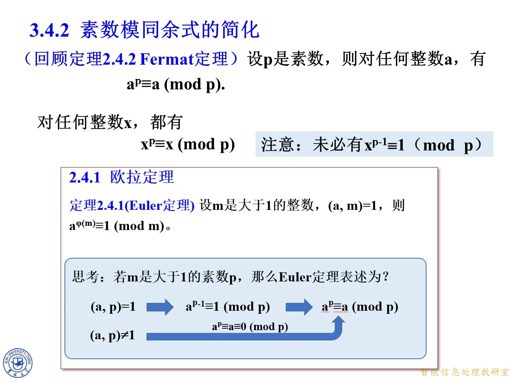
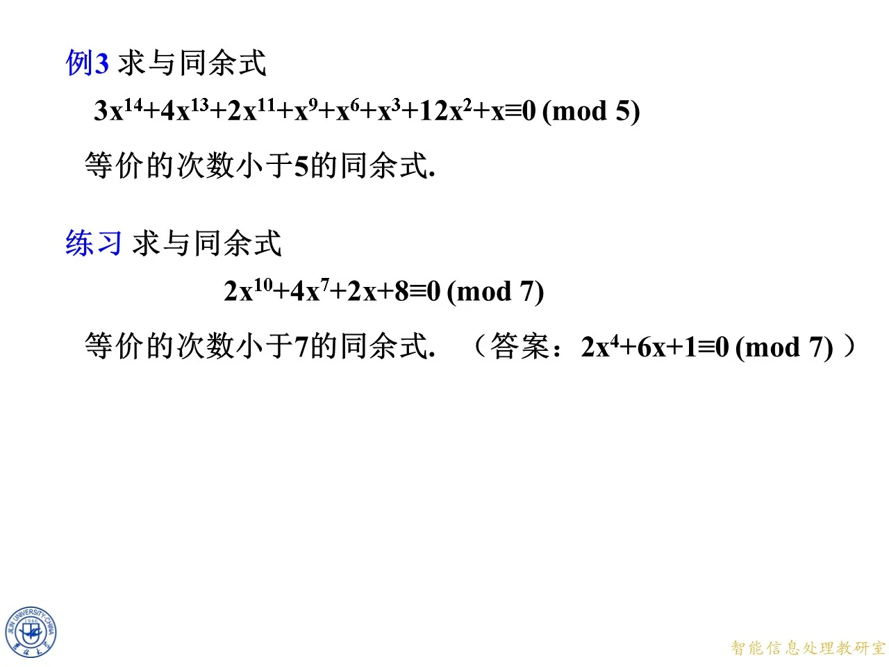
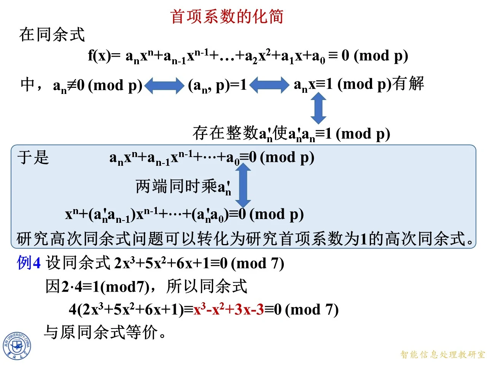

这一课讲 3.4 节的第二个主题：素数模下怎样把高次同余式压成低次的等价式子。它在 3.4 节的中段，前面刚建立多项式同余式和「解」的概念，这里要接手一个很实际的困难——次数一高，逐个代入就不可行；后面讨论同余式的解数、威尔逊定理一类的内容，也都要先把次数压下来才能说清。整套工具其实只有一件：Fermat 定理在素数模下给出的恒等关系，它让指数可以按周期回收，也让多项式可以像整数那样「取余」。学完这一课，任意整数系数多项式同余式（模素数）都能压到次数小于模数，并且首项系数可以化成 1。
起点：Fermat 定理与「不能随便用 x p − 1 ≡ 1 x^{p-1}\equiv 1 x p − 1 ≡ 1
◆ p.242-245 ｜回顾定理 2.4.2（Fermat 定理）
p.242 只有节标题「3.4.2 素数模同余式的简化」，没有实质内容，是过渡页；按页块合并规则并入本页，不单独讲解。
从 p.243 起，课件把第 2 章的工具搬回来。定理 2.4.2（Fermat 定理） ：设 p p p a a a
a p ≡ a ( m o d p ) . a^p\equiv a\pmod p . a p ≡ a ( mod p ) .
把字母换成 x x x x x x x p ≡ x ( m o d p ) x^p\equiv x\pmod p x p ≡ x ( mod p ) x x x p p p x ≡ 0 ( m o d p ) x\equiv 0\pmod p x ≡ 0 ( mod p ) 0 0 0
紧接着 p.245 的右上角有一句红底提示：注意：未必有 x p − 1 ≡ 1 ( m o d p ) x^{p-1}\equiv 1\ (\mathrm{mod}\ p) x p − 1 ≡ 1 ( mod p ) 。这句话是整节课的防错阀。p − 1 p-1 p − 1 p p p x ≡ 0 x\equiv 0 x ≡ 0 p ∣ x p\mid x p ∣ x 0 p − 1 = 0 0^{p-1}=0 0 p − 1 = 0 p > 1 p>1 p > 1 1 1 1 x p − 1 ≡ 1 ( m o d p ) x^{p-1}\equiv 1\pmod p x p − 1 ≡ 1 ( mod p ) p ∤ x p\nmid x p ∤ x x p ≡ x ( m o d p ) x^p\equiv x\pmod p x p ≡ x ( mod p )
同一页左侧方框给出 2.4.1 欧拉定理 ：设 m m m 1 1 1 ( a , m ) = 1 (a,m)=1 ( a , m ) = 1 a φ ( m ) ≡ 1 ( m o d m ) a^{\varphi(m)}\equiv 1\pmod m a φ ( m ) ≡ 1 ( mod m ) m m m 1 1 1 p p p φ ( p ) = p − 1 \varphi(p)=p-1 φ ( p ) = p − 1 ( a , p ) = 1 (a,p)=1 ( a , p ) = 1 a p − 1 ≡ 1 ( m o d p ) a^{p-1}\equiv 1\pmod p a p − 1 ≡ 1 ( mod p ) ( a , p ) ≠ 1 (a,p)\ne 1 ( a , p ) = 1 a ≡ 0 ( m o d p ) a\equiv 0\pmod p a ≡ 0 ( mod p ) a p ≡ a ≡ 0 ( m o d p ) a^p\equiv a\equiv 0\pmod p a p ≡ a ≡ 0 ( mod p ) a p ≡ a ( m o d p ) a^p\equiv a\pmod p a p ≡ a ( mod p )
拓展 （课件外补充）：这个合并值得多看一眼。欧拉定理要求 ( a , m ) = 1 (a,m)=1 ( a , m ) = 1 φ ( m ) \varphi(m) φ ( m ) m m m 0 0 0 p − 1 p-1 p − 1 x p − x = x ( x p − 1 − 1 ) x^p-x=x(x^{p-1}-1) x p − x = x ( x p − 1 − 1 ) x ≡ 0 x\equiv 0 x ≡ 0 x x x x ≢ 0 x\not\equiv 0 x ≡ 0 x p − 1 − 1 x^{p-1}-1 x p − 1 − 1 x p − x x^p-x x p − x x p − 1 − 1 x^{p-1}-1 x p − 1 − 1

课件原图 · 10月9日授课 · 第 245 页 查看前后已收录原页 → 降次表：模 7 下每个指数可以换成什么
◆ p.246-253
p.246 到 p.253 是同一张幻灯片逐步长出来的过程：p.246 先重述 Fermat 定理，p.247、p.248 补上 x p ≡ x x^p\equiv x x p ≡ x p = 7 p=7 p = 7
原式
换成
原式
换成
x 7 ≡ x ( m o d 7 ) x^7\equiv x\pmod 7 x 7 ≡ x ( mod 7 ) x 7 x^7 x 7 x x x x 8 ≡ x 2 ( m o d 7 ) x^8\equiv x^2\pmod 7 x 8 ≡ x 2 ( mod 7 ) x 8 x^8 x 8 x 2 x^2 x 2
x 9 ≡ x 3 ( m o d 7 ) x^9\equiv x^3\pmod 7 x 9 ≡ x 3 ( mod 7 ) x 9 x^9 x 9 x 3 x^3 x 3 x 10 ≡ x 4 ( m o d 7 ) x^{10}\equiv x^4\pmod 7 x 10 ≡ x 4 ( mod 7 ) x 10 x^{10} x 10 x 4 x^4 x 4
x 11 ≡ x 5 ( m o d 7 ) x^{11}\equiv x^5\pmod 7 x 11 ≡ x 5 ( mod 7 ) x 11 x^{11} x 11 x 5 x^5 x 5 x 12 ≡ x 6 ( m o d 7 ) x^{12}\equiv x^6\pmod 7 x 12 ≡ x 6 ( mod 7 ) x 12 x^{12} x 12 x 6 x^6 x 6
x 13 ≡ x ( m o d 7 ) x^{13}\equiv x\pmod 7 x 13 ≡ x ( mod 7 ) x 13 x^{13} x 13 x x x x 14 ≡ x 2 ( m o d 7 ) x^{14}\equiv x^2\pmod 7 x 14 ≡ x 2 ( mod 7 ) x 14 x^{14} x 14 x 2 x^2 x 2
规律很整齐：指数 7 到 12 分别对应 1 到 6，然后 13、14 又回到 1、2——周期是 6 = p − 1 6=p-1 6 = p − 1 x 7 ≡ x ( m o d p ) x^7\equiv x\pmod p x 7 ≡ x ( mod p ) x k − 7 x^{k-7} x k − 7 k ≥ 7 k\ge 7 k ≥ 7 x k ≡ x k − 6 x^k\equiv x^{k-6} x k ≡ x k − 6 6 6 6 7 7 7 6 6 6 1 1 1 6 6 6
这里有两种等价的操作口径，选一种并始终如一，就不会出错：
减法口径 ：指数 ≥ 7 \ge 7 ≥ 7 6 6 6 7 7 7 x 0 x^0 x 0 取模口径 ：把正指数 e e e 1 + ( ( e − 1 ) m o d 6 ) 1+((e-1)\bmod 6) 1 + (( e − 1 ) mod 6 ) e ≡ 1 ( m o d 6 ) e\equiv 1\pmod 6 e ≡ 1 ( mod 6 ) 1 1 1 0 0 0 x 0 x^0 x 0
拓展 （课件外补充）：为什么不能用「e m o d 6 e\bmod 6 e mod 6 x 6 ≡ 1 x^6\equiv 1 x 6 ≡ 1 p ∤ x p\nmid x p ∤ x x = 0 x=0 x = 0 x 6 = 0 x^6=0 x 6 = 0 x 6 x^6 x 6 1 1 1 0 6 = 1 0^6=1 0 6 = 1 x 7 ≡ x x^7\equiv x x 7 ≡ x x = 0 x=0 x = 0 6 6 6 x 0 x^0 x 0 1 + ( ( e − 1 ) m o d 6 ) 1+((e-1)\bmod 6) 1 + (( e − 1 ) mod 6 ) 任何指数的代表值都必须是正数 。这条在模 5 5 5 4 4 4 3 3 3 2 2 2
◆ p.254-256
表格长出的下一行是 x 19 ≡ x ( m o d 7 ) x^{19}\equiv x\pmod 7 x 19 ≡ x ( mod 7 ) 19 − 6 = 13 19-6=13 19 − 6 = 13 13 − 6 = 7 13-6=7 13 − 6 = 7 7 7 7 1 1 1 x x x 19 = 1 + 18 = 1 + 6 × 3 19=1+18=1+6\times 3 19 = 1 + 18 = 1 + 6 × 3 19 ↦ 1 + ( ( 19 − 1 ) m o d 6 ) = 1 + 0 = 1 19\mapsto 1+((19-1)\bmod 6)=1+0=1 19 ↦ 1 + (( 19 − 1 ) mod 6 ) = 1 + 0 = 1 x x x
这一行的意义不在于 19 19 19 6 6 6 x 19 ≡ x x^{19}\equiv x x 19 ≡ x
◆ p.257-258
接着补上 x 37 ≡ x ( m o d 7 ) x^{37}\equiv x\pmod 7 x 37 ≡ x ( mod 7 ) 37 = 1 + 36 = 1 + 6 × 6 37=1+36=1+6\times 6 37 = 1 + 36 = 1 + 6 × 6 x x x 7 7 7
拓展 （课件外补充）：真正用时建议先算 e − 1 e-1 e − 1 p − 1 p-1 p − 1 1 1 1 7 7 7 p − 1 = 6 p-1=6 p − 1 = 6 5 5 5 4 4 4 3 3 3 2 2 2 p − 1 p-1 p − 1 p p p p p p x 7 ≡ x 2 x^7\equiv x^2 x 7 ≡ x 2
用 x p − x x^p-x x p − x
◆ p.259-263 ｜2 x 45 + 3 x 37 + x 19 + 5 x 8 2x^{45}+3x^{37}+x^{19}+5x^8 2 x 45 + 3 x 37 + x 19 + 5 x 8
p.259 先抛出待化简的式子，p.260 到 p.262 逐项处理，p.263 收尾。题目是：在模 7 7 7
2 x 45 + 3 x 37 + x 19 + 5 x 8 . 2x^{45}+3x^{37}+x^{19}+5x^8 . 2 x 45 + 3 x 37 + x 19 + 5 x 8 .
思路：这是一次性的「指数回收」，每一项各自降次，系数原样搬过来。逐项做：
x 45 x^{45} x 45 45 = 1 + 44 45=1+44 45 = 1 + 44 44 m o d 6 = 2 44\bmod 6=2 44 mod 6 = 2 45 ↦ 1 + 2 = 3 45\mapsto 1+2=3 45 ↦ 1 + 2 = 3 2 x 3 2x^3 2 x 3 x 37 x^{37} x 37 37 = 1 + 36 37=1+36 37 = 1 + 36 36 m o d 6 = 0 36\bmod 6=0 36 mod 6 = 0 37 ↦ 1 37\mapsto 1 37 ↦ 1 3 x 3x 3 x x 19 x^{19} x 19 x x x x x x x 8 x^8 x 8 8 = 1 + 7 8=1+7 8 = 1 + 7 7 m o d 6 = 1 7\bmod 6=1 7 mod 6 = 1 8 ↦ 1 + 1 = 2 8\mapsto 1+1=2 8 ↦ 1 + 1 = 2 5 x 2 5x^2 5 x 2
合并得到
2 x 45 + 3 x 37 + x 19 + 5 x 8 ≡ 2 x 3 + 3 x + x + 5 x 2 ( m o d 7 ) . 2x^{45}+3x^{37}+x^{19}+5x^8\equiv 2x^3+3x+x+5x^2\pmod 7 . 2 x 45 + 3 x 37 + x 19 + 5 x 8 ≡ 2 x 3 + 3 x + x + 5 x 2 ( mod 7 ) .
中间那两步课件写得分开，是为了看清「3 x 3x 3 x x x x 4 x 4x 4 x
2 x 45 + 3 x 37 + x 19 + 5 x 8 ≡ 2 x 3 + 5 x 2 + 4 x ( m o d 7 ) . 2x^{45}+3x^{37}+x^{19}+5x^8\equiv 2x^3+5x^2+4x\pmod 7 . 2 x 45 + 3 x 37 + x 19 + 5 x 8 ≡ 2 x 3 + 5 x 2 + 4 x ( mod 7 ) .
到这里次数已经低于 7 7 7 x = 0 , … , 6 x=0,\ldots,6 x = 0 , … , 6
需要注意的是：这是化简 ，不是求解 。课件没有要求求根，只要求换成一个与原式同解的、次数更低的式子。若要继续求根，还得解 2 x 3 + 5 x 2 + 4 x ≡ 0 ( m o d 7 ) 2x^3+5x^2+4x\equiv 0\pmod 7 2 x 3 + 5 x 2 + 4 x ≡ 0 ( mod 7 )
◆ p.264-265 ｜5 x 11 + 6 x 9 + x 7 5x^{11}+6x^9+x^7 5 x 11 + 6 x 9 + x 7
同一方法的第二个例子：模 7 7 7
5 x 11 + 6 x 9 + x 7 ≡ 5 x 5 + 6 x 3 + x ( m o d 7 ) . 5x^{11}+6x^9+x^7\equiv 5x^5+6x^3+x\pmod 7 . 5 x 11 + 6 x 9 + x 7 ≡ 5 x 5 + 6 x 3 + x ( mod 7 ) .
逐项核对：11 = 1 + 10 11=1+10 11 = 1 + 10 10 m o d 6 = 4 10\bmod 6=4 10 mod 6 = 4 11 ↦ 5 11\mapsto 5 11 ↦ 5 9 = 1 + 8 9=1+8 9 = 1 + 8 8 m o d 6 = 2 8\bmod 6=2 8 mod 6 = 2 9 ↦ 3 9\mapsto 3 9 ↦ 3 7 7 7 1 1 1 5 5 5 6 6 6
系数也要取余——这一步课件在这个例子里没机会展示，因为给的系数都小于 7 7 7 9 x 11 9x^{11} 9 x 11 9 ≡ 2 ( m o d 7 ) 9\equiv 2\pmod 7 9 ≡ 2 ( mod 7 ) x 11 x^{11} x 11 x 5 x^5 x 5
这个例子后面还会在 p.290 以「多项式除法」的形式再算一遍，两处结果相同——那正是为了说明除法口径与指数口径殊途同归。
思考：x p − x ≡ 0 x^p-x\equiv 0 x p − x ≡ 0
◆ p.266-271
p.266 是过渡帧，页面上只剩下标题、Fermat 那一行和正在出现的 x p − x ≡ 0 x^p-x\equiv 0 x p − x ≡ 0 x p − x ≡ 0 ( m o d p ) x^p-x\equiv 0\pmod p x p − x ≡ 0 ( mod p )
思考（1） ：x p − x ≡ 0 ( m o d p ) x^p-x\equiv 0\pmod p x p − x ≡ 0 ( mod p )
答案：p p p 0 , 1 , 2 , … , p − 1 0,1,2,\ldots,p-1 0 , 1 , 2 , … , p − 1 x x x x p ≡ x ( m o d p ) x^p\equiv x\pmod p x p ≡ x ( mod p ) p p p p p p p p p 0 0 0 p − 1 p-1 p − 1
思考（2） ：x p − 1 − 1 ≡ 0 ( m o d p ) x^{p-1}-1\equiv 0\pmod p x p − 1 − 1 ≡ 0 ( mod p )
这一问要小心。p.271 的方框把模 p p p 0 , 1 , 2 , … , p − 1 0,1,2,\ldots,p-1 0 , 1 , 2 , … , p − 1 1 , 2 , … , p − 1 1,2,\ldots,p-1 1 , 2 , … , p − 1 p p p x p − 1 ≡ 1 ( m o d p ) x^{p-1}\equiv 1\pmod p x p − 1 ≡ 1 ( mod p ) 0 0 0 0 p − 1 − 1 = − 1 ≢ 0 0^{p-1}-1=-1\not\equiv 0 0 p − 1 − 1 = − 1 ≡ 0 p − 1 p-1 p − 1 1 , 2 , … , p − 1 1,2,\ldots,p-1 1 , 2 , … , p − 1
对比两问，差的那一个解就是 0 0 0 x p − 1 ≡ 1 x^{p-1}\equiv 1 x p − 1 ≡ 1
拓展 （课件外补充）：为什么只需在一个完全剩余系里数解？因为同余式的解集是整数的子集，但按模 p p p p p p x x x x + k p x+kp x + k p x p − x x^p-x x p − x x p − 1 − 1 x^{p-1}-1 x p − 1 − 1 p p p x x x p p p
◆ p.272-273
思考题之后，课件在 p.273 底部抛出总问题：模 p p p
这是整节课的「悬念」。直觉上会想答「次数是几就最多几个解」，但这个直觉在素数模下也不总对。反例马上就来：p.306 填空题第一题 7 x 2 + 14 ≡ 0 ( m o d 7 ) 7x^2+14\equiv 0\pmod 7 7 x 2 + 14 ≡ 0 ( mod 7 ) 2 2 2 7 7 7 7 7 7 0 0 0
正确的回答要等到 p.315 的推论：任意模 p p p p p p p p p r ( x ) r(x) r ( x ) 0 0 0 r r r p p p p p p p p p
拓展 （课件外补充）：把 p.273 的问题和 p.306 的五道填空放在一起看，会发现课件在教一个很实用的判据：先降次、再数解 。若不降次直接看次数，会遇到两类陷阱——次数虚高（如 x 45 x^{45} x 45 x 3 x^3 x 3 7 x 2 + 14 7x^2+14 7 x 2 + 14
从整数取余到多项式取余
◆ p.274-277
p.274 是过渡帧，画面上只留下 x p − x ≡ 0 ( m o d p ) x^p-x\equiv 0\pmod p x p − x ≡ 0 ( mod p )
先看最熟的情形：5 ≡ 0 ( m o d 5 ) 5\equiv 0\pmod 5 5 ≡ 0 ( mod 5 ) 5 5 5 5 5 5 17 = 3 × 5 + 2 17=3\times 5+2 17 = 3 × 5 + 2 17 ≡ 2 ( m o d 5 ) 17\equiv 2\pmod 5 17 ≡ 2 ( mod 5 ) 3 × 5 3\times 5 3 × 5 2 2 2
把这两句合起来写成一般形式：设整数 f f f 5 5 5 q q q r r r f = q × 5 + r f=q\times 5+r f = q × 5 + r f ≡ r ( m o d 5 ) f\equiv r\pmod 5 f ≡ r ( mod 5 ) q × 5 q\times 5 q × 5 5 5 5 5 5 5 0 0 0 f = q × 5 + r ≡ ? ( m o d 5 ) f=q\times 5+r\equiv ?\pmod 5 f = q × 5 + r ≡ ? ( mod 5 )
拓展 （课件外补充）：注意 17 = 3 × 5 + 2 17=3\times 5+2 17 = 3 × 5 + 2 3 3 3 17 = 1 × 5 + 12 17=1\times 5+12 17 = 1 × 5 + 12 12 12 12 0 ≤ r < 5 0\le r<5 0 ≤ r < 5 r r r r ( x ) r(x) r ( x ) deg r < deg ( x p − x ) = p \deg r<\deg(x^p-x)=p deg r < deg ( x p − x ) = p x 5 − x x^5-x x 5 − x 3 x 3 + 16 x 2 + 6 x 3x^3+16x^2+6x 3 x 3 + 16 x 2 + 6 x
◆ p.278-280
p.278 把 17 ≡ 2 ( m o d 5 ) 17\equiv 2\pmod 5 17 ≡ 2 ( mod 5 ) f = q × 5 + r ≡ ? ( m o d 5 ) f=q\times 5+r\equiv ?\pmod 5 f = q × 5 + r ≡ ? ( mod 5 ) f = q × 5 + r ≡ r ( m o d 5 ) f=q\times 5+r\equiv r\pmod 5 f = q × 5 + r ≡ r ( mod 5 )
这一步的逻辑已经完整：5 5 5 5 5 5 q q q q × 5 q\times 5 q × 5 r r r 除数是模数的倍数时，商那一整块可以任意丢弃，余数完全决定同余类 。
这里值得停下来体会「任意」二字：q q q f = q × 5 + r f=q\times 5+r f = q × 5 + r
◆ p.281-283
p.281 把整数情形的结论写成 f = q × 5 + r ≡ r ( m o d 5 ) f=q\times 5+r\equiv r\pmod 5 f = q × 5 + r ≡ r ( mod 5 ) x p − x ≡ 0 ( m o d p ) x^p-x\equiv 0\pmod p x p − x ≡ 0 ( mod p ) q × ( x p − x ) + r ≡ ? ( m o d p ) q\times(x^p-x)+r\equiv ?\pmod p q × ( x p − x ) + r ≡ ? ( mod p )
这一步就是把上一页的类比原样搬过来，只是把「5 5 5 x p − x x^p-x x p − x q q q q ( x ) q(x) q ( x ) x p − x ≡ 0 ( m o d p ) x^p-x\equiv 0\pmod p x p − x ≡ 0 ( mod p ) 任何整数 x x x 成立——它和「5 ≡ 0 ( m o d 5 ) 5\equiv 0\pmod 5 5 ≡ 0 ( mod 5 )
p.282 先写出第（4）问，p.283 把 f ( x ) = q ( x ) ⋅ ( x p − x ) + r ( x ) ≡ ? ( m o d p ) f(x)=q(x)\cdot(x^p-x)+r(x)\equiv ?\pmod p f ( x ) = q ( x ) ⋅ ( x p − x ) + r ( x ) ≡ ? ( mod p ) ≡ r ( x ) ( m o d p ) \equiv r(x)\pmod p ≡ r ( x ) ( mod p )
拓展 （课件外补充）：类比里有一个细节不能照搬。整数情形下 q q q r r r f = q ⋅ 5 + r f=q\cdot 5+r f = q ⋅ 5 + r 等式 ；多项式情形下 f ( x ) = q ( x ) ( x p − x ) + r ( x ) f(x)=q(x)(x^p-x)+r(x) f ( x ) = q ( x ) ( x p − x ) + r ( x ) p p p ≡ \equiv ≡ f ( x ) ≡ q ( x ) ( x p − x ) ( m o d p ) f(x)\equiv q(x)(x^p-x)\pmod p f ( x ) ≡ q ( x ) ( x p − x ) ( mod p ) 系数模 p p p ，而不是恒等。二者的区别在 p.318 那个反例里会显形。
◆ p.284-290 ｜5 x 11 + 6 x 9 + x 7 5x^{11}+6x^9+x^7 5 x 11 + 6 x 9 + x 7
p.284 填上 q × ( x p − x ) + r ≡ r ( m o d p ) q\times(x^p-x)+r\equiv r\pmod p q × ( x p − x ) + r ≡ r ( mod p )
f ( x ) = q ( x ) ⋅ ( x p − x ) + r ( x ) ≡ r ( x ) ( m o d p ) . f(x)=q(x)\cdot(x^p-x)+r(x)\equiv r(x)\pmod p . f ( x ) = q ( x ) ⋅ ( x p − x ) + r ( x ) ≡ r ( x ) ( mod p ) .
p.288 到 p.290 用具体的多项式把这条一般式落地，用的正是前面 p.264 已经用指数口径降过一次的 5 x 11 + 6 x 9 + x 7 5x^{11}+6x^9+x^7 5 x 11 + 6 x 9 + x 7
5 x 11 + 6 x 9 + x 7 = ( 5 x 4 + 6 x 2 + 1 ) ⋅ ( x 7 − x ) + ( 5 x 5 + 6 x 3 + x ) ≡ 5 x 5 + 6 x 3 + x ( m o d 7 ) . 5x^{11}+6x^9+x^7=(5x^4+6x^2+1)\cdot(x^7-x)+(5x^5+6x^3+x)\equiv 5x^5+6x^3+x\pmod 7 . 5 x 11 + 6 x 9 + x 7 = ( 5 x 4 + 6 x 2 + 1 ) ⋅ ( x 7 − x ) + ( 5 x 5 + 6 x 3 + x ) ≡ 5 x 5 + 6 x 3 + x ( mod 7 ) .
这个等式怎么凑出来的？摊开就明白：
( 5 x 4 + 6 x 2 + 1 ) ( x 7 − x ) = 5 x 11 + 6 x 9 + x 7 − 5 x 5 − 6 x 3 − x . (5x^4+6x^2+1)(x^7-x)=5x^{11}+6x^9+x^7-5x^5-6x^3-x . ( 5 x 4 + 6 x 2 + 1 ) ( x 7 − x ) = 5 x 11 + 6 x 9 + x 7 − 5 x 5 − 6 x 3 − x .
前二项正好是原式要的高次部分，后三项是「多减了的」，所以余式里要把它补回来：r ( x ) = 5 x 5 + 6 x 3 + x r(x)=5x^5+6x^3+x r ( x ) = 5 x 5 + 6 x 3 + x 5 5 5 x 7 − x x^7-x x 7 − x 7 7 7
对照 p.264 的结果，两条路给出同一个 5 x 5 + 6 x 3 + x 5x^5+6x^3+x 5 x 5 + 6 x 3 + x
定理 3.4.1：素数模同余式的降次定理
◆ p.291-297
p.291 到 p.295 是同一条思路的动画帧：方框里先摆出除法等式 f ( x ) = q ( x ) ( x p − x ) + r ( x ) f(x)=q(x)(x^p-x)+r(x) f ( x ) = q ( x ) ( x p − x ) + r ( x ) f ( x ) ≡ 0 f(x)\equiv 0 f ( x ) ≡ 0 r ( x ) ≡ 0 r(x)\equiv 0 r ( x ) ≡ 0 deg r < p \deg r<p deg r < p
定理 3.4.1 ：素数模 n n n
f ( x ) = a n x n + a n − 1 x n − 1 + ⋯ + a 2 x 2 + a 1 x + a 0 ≡ 0 ( m o d p ) f(x)=a_nx^n+a_{n-1}x^{n-1}+\cdots+a_2x^2+a_1x+a_0\equiv 0\pmod p f ( x ) = a n x n + a n − 1 x n − 1 + ⋯ + a 2 x 2 + a 1 x + a 0 ≡ 0 ( mod p )
必与一个次数不超过 p − 1 p-1 p − 1 p p p
课件紧跟一句推论式的话：「由此定理，对素数模同余式，只需讨论次数小于 p p p
读这条定理要注意三个词：
n n n a n ≢ 0 ( m o d p ) a_n\not\equiv 0\pmod p a n ≡ 0 ( mod p ) p p p 等价 ：指解集相同，即对每个整数 x x x 次数不超过 p − 1 p-1 p − 1 ：余式的次数严格小于 p p p x p − x x^p-x x p − x
定理的证明思路在 p.291 到 p.295 的方框里已经画好，正式推导放在 p.307 起（下面会逐行讲）。
拓展 （课件外补充）：为什么门槛是 p − 1 p-1 p − 1 p p p p p p x x x p p p x p − x x^p-x x p − x p p p p p p p p p p p p p p p p p p p p p p p p 1 , x , x 2 , … , x p − 1 1,x,x^2,\ldots,x^{p-1} 1 , x , x 2 , … , x p − 1 p p p
例 3：把 14 14 14 3 3 3
◆ p.298-299 ｜解法一（多项式除法）
题目：求与同余式
3 x 14 + 4 x 13 + 2 x 11 + x 9 + x 6 + x 3 + 12 x 2 + x ≡ 0 ( m o d 5 ) 3x^{14}+4x^{13}+2x^{11}+x^9+x^6+x^3+12x^2+x\equiv 0\pmod 5 3 x 14 + 4 x 13 + 2 x 11 + x 9 + x 6 + x 3 + 12 x 2 + x ≡ 0 ( mod 5 )
等价的、次数小于 5 5 5
模数是 5 5 5 x 5 − x x^5-x x 5 − x 4 4 4
3 x 14 + 4 x 13 + 2 x 11 + x 9 + x 6 + x 3 + 12 x 2 + x = ( x 5 − x ) ( 3 x 9 + 4 x 8 + 2 x 6 + 3 x 5 + 5 x 4 + 2 x 2 + 4 x + 5 ) + ( 3 x 3 + 16 x 2 + 6 x ) . 3x^{14}+4x^{13}+2x^{11}+x^9+x^6+x^3+12x^2+x=(x^5-x)(3x^9+4x^8+2x^6+3x^5+5x^4+2x^2+4x+5)+(3x^3+16x^2+6x). 3 x 14 + 4 x 13 + 2 x 11 + x 9 + x 6 + x 3 + 12 x 2 + x = ( x 5 − x ) ( 3 x 9 + 4 x 8 + 2 x 6 + 3 x 5 + 5 x 4 + 2 x 2 + 4 x + 5 ) + ( 3 x 3 + 16 x 2 + 6 x ) .
这个等式要真验一遍，不能只信课件。把括号乘开：
( x 5 − x ) ( 3 x 9 + 4 x 8 + 2 x 6 + 3 x 5 + 5 x 4 + 2 x 2 + 4 x + 5 ) (x^5-x)(3x^9+4x^8+2x^6+3x^5+5x^4+2x^2+4x+5) ( x 5 − x ) ( 3 x 9 + 4 x 8 + 2 x 6 + 3 x 5 + 5 x 4 + 2 x 2 + 4 x + 5 ) = 3 x 14 + 4 x 13 + 2 x 11 + 3 x 10 + 5 x 9 + 2 x 7 + 4 x 6 + 5 x 5 − 3 x 10 − 4 x 9 − 2 x 7 − 3 x 6 − 5 x 5 − 2 x 3 − 4 x 2 − 5 x . =3x^{14}+4x^{13}+2x^{11}+3x^{10}+5x^9+2x^7+4x^6+5x^5-3x^{10}-4x^9-2x^7-3x^6-5x^5-2x^3-4x^2-5x . = 3 x 14 + 4 x 13 + 2 x 11 + 3 x 10 + 5 x 9 + 2 x 7 + 4 x 6 + 5 x 5 − 3 x 10 − 4 x 9 − 2 x 7 − 3 x 6 − 5 x 5 − 2 x 3 − 4 x 2 − 5 x .
同类项相消：3 x 10 3x^{10} 3 x 10 − 3 x 10 -3x^{10} − 3 x 10 2 x 7 2x^7 2 x 7 − 2 x 7 -2x^7 − 2 x 7 5 x 5 5x^5 5 x 5 − 5 x 5 -5x^5 − 5 x 5 5 x 9 − 4 x 9 = x 9 5x^9-4x^9=x^9 5 x 9 − 4 x 9 = x 9 4 x 6 − 3 x 6 = x 6 4x^6-3x^6=x^6 4 x 6 − 3 x 6 = x 6
3 x 14 + 4 x 13 + 2 x 11 + x 9 + x 6 − 2 x 3 − 4 x 2 − 5 x . 3x^{14}+4x^{13}+2x^{11}+x^9+x^6-2x^3-4x^2-5x . 3 x 14 + 4 x 13 + 2 x 11 + x 9 + x 6 − 2 x 3 − 4 x 2 − 5 x .
再补上余式 3 x 3 + 16 x 2 + 6 x 3x^3+16x^2+6x 3 x 3 + 16 x 2 + 6 x − 2 + 3 = 1 -2+3=1 − 2 + 3 = 1 − 4 + 16 = 12 -4+16=12 − 4 + 16 = 12 − 5 + 6 = 1 -5+6=1 − 5 + 6 = 1 x 3 + 12 x 2 + x x^3+12x^2+x x 3 + 12 x 2 + x
于是原同余式等价于
3 x 3 + 16 x 2 + 6 x ≡ 0 ( m o d 5 ) , 3x^3+16x^2+6x\equiv 0\pmod 5 , 3 x 3 + 16 x 2 + 6 x ≡ 0 ( mod 5 ) ,
系数取模 5 5 5 3 ≡ 3 3\equiv 3 3 ≡ 3 16 ≡ 1 16\equiv 1 16 ≡ 1 6 ≡ 1 6\equiv 1 6 ≡ 1
3 x 3 + x 2 + x ≡ 0 ( m o d 5 ) . 3x^3+x^2+x\equiv 0\pmod 5 . 3 x 3 + x 2 + x ≡ 0 ( mod 5 ) .
次数 3 < 5 3<5 3 < 5 x 5 − x x^5-x x 5 − x 5 5 5 ( x 5 − x ) ⋅ ( ⋯ ) (x^5-x)\cdot(\cdots) ( x 5 − x ) ⋅ ( ⋯ )
拓展 （课件外补充）：商式里出现 5 x 4 5x^4 5 x 4 5 5 5 0 0 0 整数系数意义下的除法 ，商必须让等式在整数上严格成立；只有到「转成同余式」时才允许系数取余。如果一开始就在模 5 5 5 5 x 4 5x^4 5 x 4 0 0 0 5 5 5 0 0 0 4 4 4 5 5 5
◆ p.300-302 ｜解法二（逐项降指数）
解法二不走除法，改用 p.253 那张表：模 5 5 5 4 4 4 e e e 1 + ( ( e − 1 ) m o d 4 ) 1+((e-1)\bmod 4) 1 + (( e − 1 ) mod 4 )
x 14 x^{14} x 14 14 = 1 + 13 14=1+13 14 = 1 + 13 13 m o d 4 = 1 13\bmod 4=1 13 mod 4 = 1 14 ↦ 2 14\mapsto 2 14 ↦ 2 3 x 2 3x^2 3 x 2 x 13 x^{13} x 13 13 = 1 + 12 13=1+12 13 = 1 + 12 12 m o d 4 = 0 12\bmod 4=0 12 mod 4 = 0 13 ↦ 1 13\mapsto 1 13 ↦ 1 4 x 4x 4 x x 11 x^{11} x 11 11 = 1 + 10 11=1+10 11 = 1 + 10 10 m o d 4 = 2 10\bmod 4=2 10 mod 4 = 2 11 ↦ 3 11\mapsto 3 11 ↦ 3 2 x 3 2x^3 2 x 3 x 9 x^9 x 9 9 = 1 + 8 9=1+8 9 = 1 + 8 8 m o d 4 = 0 8\bmod 4=0 8 mod 4 = 0 9 ↦ 1 9\mapsto 1 9 ↦ 1 x x x x 6 x^6 x 6 6 = 1 + 5 6=1+5 6 = 1 + 5 5 m o d 4 = 1 5\bmod 4=1 5 mod 4 = 1 6 ↦ 2 6\mapsto 2 6 ↦ 2 x 2 x^2 x 2 x 3 x^3 x 3 12 x 2 12x^2 12 x 2 x x x 5 5 5
拼起来：
3 x 14 + 4 x 13 + 2 x 11 + x 9 + x 6 + x 3 + 12 x 2 + x ≡ 3 x 2 + 4 x + 2 x 3 + x + x 2 + x 3 + 12 x 2 + x ( m o d 5 ) . 3x^{14}+4x^{13}+2x^{11}+x^9+x^6+x^3+12x^2+x\equiv 3x^2+4x+2x^3+x+x^2+x^3+12x^2+x\pmod 5 . 3 x 14 + 4 x 13 + 2 x 11 + x 9 + x 6 + x 3 + 12 x 2 + x ≡ 3 x 2 + 4 x + 2 x 3 + x + x 2 + x 3 + 12 x 2 + x ( mod 5 ) .
合并同类项：三次项 2 + 1 = 3 2+1=3 2 + 1 = 3 3 + 1 + 12 = 16 3+1+12=16 3 + 1 + 12 = 16 4 + 1 + 1 = 6 4+1+1=6 4 + 1 + 1 = 6 3 x 3 + 6 x 2 + 6 x 3x^3+6x^2+6x 3 x 3 + 6 x 2 + 6 x 6 6 6 16 16 16 12 x 2 12x^2 12 x 2 5 5 5 2 x 2 2x^2 2 x 2 3 + 1 + 2 = 6 3+1+2=6 3 + 1 + 2 = 6 16 ≡ 6 ≡ 1 ( m o d 5 ) 16\equiv 6\equiv 1\pmod 5 16 ≡ 6 ≡ 1 ( mod 5 )
最后系数取余：
3 x 3 + 6 x 2 + 6 x ≡ 3 x 3 + x 2 + x ( m o d 5 ) . 3x^3+6x^2+6x\equiv 3x^3+x^2+x\pmod 5 . 3 x 3 + 6 x 2 + 6 x ≡ 3 x 3 + x 2 + x ( mod 5 ) .
与解法一完全一致。
拓展 （课件外补充）：结果 3 x 3 + x 2 + x 3x^3+x^2+x 3 x 3 + x 2 + x 5 5 5 3 − 1 ≡ 2 3^{-1}\equiv 2 3 − 1 ≡ 2 3 × 2 = 6 ≡ 1 3\times 2=6\equiv 1 3 × 2 = 6 ≡ 1 2 2 2 1 1 1 x 3 + 2 x 2 + 2 x ≡ 0 ( m o d 5 ) x^3+2x^2+2x\equiv 0\pmod 5 x 3 + 2 x 2 + 2 x ≡ 0 ( mod 5 ) 3 x 3 + x 2 + x ≡ 3 x ( x − 1 ) ( x − 2 ) ( m o d 5 ) 3x^3+x^2+x\equiv 3x(x-1)(x-2)\pmod 5 3 x 3 + x 2 + x ≡ 3 x ( x − 1 ) ( x − 2 ) ( mod 5 ) 3 x ( x − 1 ) ( x − 2 ) = 3 x 3 − 9 x 2 + 6 x 3x(x-1)(x-2)=3x^3-9x^2+6x 3 x ( x − 1 ) ( x − 2 ) = 3 x 3 − 9 x 2 + 6 x 0 , 1 , 2 0,1,2 0 , 1 , 2

课件原图 · 10月9日授课 · 第 304 页 查看前后已收录原页 → 练习：模 7 7 7
◆ p.303-304
题目：求与同余式
2 x 10 + 4 x 7 + 2 x + 8 ≡ 0 ( m o d 7 ) 2x^{10}+4x^7+2x+8\equiv 0\pmod 7 2 x 10 + 4 x 7 + 2 x + 8 ≡ 0 ( mod 7 )
等价的、次数小于 7 7 7
模 7 7 7 6 6 6
2 x 10 2x^{10} 2 x 10 10 = 1 + 9 10=1+9 10 = 1 + 9 9 m o d 6 = 3 9\bmod 6=3 9 mod 6 = 3 10 ↦ 4 10\mapsto 4 10 ↦ 4 2 x 4 2x^4 2 x 4 4 x 7 4x^7 4 x 7 7 = 1 + 6 7=1+6 7 = 1 + 6 6 m o d 6 = 0 6\bmod 6=0 6 mod 6 = 0 7 ↦ 1 7\mapsto 1 7 ↦ 1 4 x 4x 4 x 2 x 2x 2 x 7 7 7 常数项 8 8 8 8 ≡ 1 ( m o d 7 ) 8\equiv 1\pmod 7 8 ≡ 1 ( mod 7 ) 1 1 1
合并：
2 x 10 + 4 x 7 + 2 x + 8 ≡ 2 x 4 + 4 x + 2 x + 8 ≡ 2 x 4 + 6 x + 1 ( m o d 7 ) . 2x^{10}+4x^7+2x+8\equiv 2x^4+4x+2x+8\equiv 2x^4+6x+1\pmod 7 . 2 x 10 + 4 x 7 + 2 x + 8 ≡ 2 x 4 + 4 x + 2 x + 8 ≡ 2 x 4 + 6 x + 1 ( mod 7 ) .
一次项 4 x + 2 x = 6 x 4x+2x=6x 4 x + 2 x = 6 x 8 8 8 1 1 1 4 < 7 4<7 4 < 7 2 x 4 + 6 x + 1 ≡ 0 ( m o d 7 ) 2x^4+6x+1\equiv 0\pmod 7 2 x 4 + 6 x + 1 ≡ 0 ( mod 7 )
用程序把 x = 0 , … , 6 x=0,\ldots,6 x = 0 , … , 6 2 x 4 + 6 x + 1 2x^4+6x+1 2 x 4 + 6 x + 1 1 , 2 , 3 , 6 , 5 , 0 , 4 1,2,3,6,5,0,4 1 , 2 , 3 , 6 , 5 , 0 , 4
拓展 （课件外补充）：这道题只要求降次，不要求首项系数为 1 1 1 1 1 1 2 − 1 ≡ 4 ( m o d 7 ) 2^{-1}\equiv 4\pmod 7 2 − 1 ≡ 4 ( mod 7 ) 2 × 4 = 8 ≡ 1 2\times 4=8\equiv 1 2 × 4 = 8 ≡ 1 x 4 + 24 x + 4 ≡ x 4 + 3 x + 4 ( m o d 7 ) x^4+24x+4\equiv x^4+3x+4\pmod 7 x 4 + 24 x + 4 ≡ x 4 + 3 x + 4 ( mod 7 )
中途检查：定理 3.4.1 复述与五道填空题
◆ p.305
过渡页。画面上重新列出定理 3.4.1 的完整陈述，下方方框留空——这是动画的起始帧。中间 p.306 插了一页当堂填空小测，之后方框里的内容才在 p.307 起逐条填进去。本页没有新信息，作用是提示「接下来正式证明这条定理」。
◆ p.306 ｜填空题 5 5 5
课件插了一道当堂小测，五小问都问「有几个解」，模数统一取 7 7 7
7 x 2 + 14 ≡ 0 ( m o d 7 ) 7x^2+14\equiv 0\pmod 7 7 x 2 + 14 ≡ 0 ( mod 7 ) x 6 − 1 ≡ 0 ( m o d 7 ) x^6-1\equiv 0\pmod 7 x 6 − 1 ≡ 0 ( mod 7 ) x 7 − x ≡ 0 ( m o d 7 ) x^7-x\equiv 0\pmod 7 x 7 − x ≡ 0 ( mod 7 ) ( x 7 − x ) + 7 x 2 + 14 ≡ 0 ( m o d 7 ) (x^7-x)+7x^2+14\equiv 0\pmod 7 ( x 7 − x ) + 7 x 2 + 14 ≡ 0 ( mod 7 ) q ( x ) ( x 7 − x ) + 7 x 2 + 14 ≡ 0 ( m o d 7 ) q(x)(x^7-x)+7x^2+14\equiv 0\pmod 7 q ( x ) ( x 7 − x ) + 7 x 2 + 14 ≡ 0 ( mod 7 ) q ( x ) q(x) q ( x )
逐题作答：
第 1 题，7 x 2 + 14 7x^2+14 7 x 2 + 14 7 7 7 7 x 2 + 14 ≡ 0 + 0 = 0 ( m o d 7 ) 7x^2+14\equiv 0+0=0\pmod 7 7 x 2 + 14 ≡ 0 + 0 = 0 ( mod 7 ) 每个 x x x 7 7 7 2 2 2
第 2 题，x 6 − 1 ≡ 0 ( m o d 7 ) x^6-1\equiv 0\pmod 7 x 6 − 1 ≡ 0 ( mod 7 ) 1 , 2 , … , 6 1,2,\ldots,6 1 , 2 , … , 6 x 6 ≡ 1 x^6\equiv 1 x 6 ≡ 1 0 6 − 1 = − 1 0^6-1=-1 0 6 − 1 = − 1 6 6 6 p p p 7 7 7
第 3 题，x 7 − x ≡ 0 ( m o d 7 ) x^7-x\equiv 0\pmod 7 x 7 − x ≡ 0 ( mod 7 ) 7 7 7 p = 7 p=7 p = 7
第 4 题，( x 7 − x ) + 7 x 2 + 14 ≡ 0 ( m o d 7 ) (x^7-x)+7x^2+14\equiv 0\pmod 7 ( x 7 − x ) + 7 x 2 + 14 ≡ 0 ( mod 7 ) 7 7 7
第 5 题，q ( x ) ( x 7 − x ) + 7 x 2 + 14 ≡ 0 ( m o d 7 ) q(x)(x^7-x)+7x^2+14\equiv 0\pmod 7 q ( x ) ( x 7 − x ) + 7 x 2 + 14 ≡ 0 ( mod 7 ) q q q x 7 − x x^7-x x 7 − x 7 7 7 q ( x ) q(x) q ( x ) 7 7 7 7 7 7 0 0 0 0 0 0 7 7 7
五个答案依次是 7、6、7、7、7。用程序枚举 x = 0 , … , 6 x=0,\ldots,6 x = 0 , … , 6 7 , 6 , 7 , 7 , 7 7,6,7,7,7 7 , 6 , 7 , 7 , 7 q q q q ( x ) = x 3 + 2 x + 5 q(x)=x^3+2x+5 q ( x ) = x 3 + 2 x + 5 7 7 7
拓展 （课件外补充）：第 1 题与第 3 题放在一起，正好说明一件容易记混的事：「恒等于零」不等于「系数全被 p p p 。第 1 题是系数被整除，第 3 题不是——x 7 − x x^7-x x 7 − x 1 1 1 − 1 -1 − 1 7 7 7 F 7 \mathbb F_7 F 7 q ( x ) q(x) q ( x ) p p p p p p
定理 3.4.1 的证明与推论
◆ p.307-309
现在正式证明。取 x p − x x^p-x x p − x f ( x ) f(x) f ( x )
f ( x ) = q ( x ) ( x p − x ) + r ( x ) , deg r < p . f(x)=q(x)(x^p-x)+r(x),\qquad \deg r<p . f ( x ) = q ( x ) ( x p − x ) + r ( x ) , deg r < p .
第一步（p.307）只交代这条除法式子和次数条件：多项式带余除法保证商 q ( x ) q(x) q ( x ) r ( x ) r(x) r ( x ) p p p 整系数意义下 的等式，还没有进入模运算。
第二步（p.308）把「对任何整数 x x x f ( x ) ≡ 0 ( m o d p ) f(x)\equiv 0\pmod p f ( x ) ≡ 0 ( mod p ) x x x r ( x ) ≡ 0 ( m o d p ) r(x)\equiv 0\pmod p r ( x ) ≡ 0 ( mod p ) x x x x p − x ≡ 0 ( m o d p ) x^p-x\equiv 0\pmod p x p − x ≡ 0 ( mod p )
q ( x ) ( x p − x ) ≡ 0 ( m o d p ) , q(x)(x^p-x)\equiv 0\pmod p , q ( x ) ( x p − x ) ≡ 0 ( mod p ) ,
所以 f ( x ) f(x) f ( x ) r ( x ) r(x) r ( x ) p p p
f ( x ) ≡ r ( x ) ( m o d p ) . f(x)\equiv r(x)\pmod p . f ( x ) ≡ r ( x ) ( mod p ) .
f ( x ) f(x) f ( x ) p p p r ( x ) r(x) r ( x ) p p p
第三步（p.309）把这句话写进方框：对任何整数 x x x f ( x ) ≡ 0 ( m o d p ) f(x)\equiv 0\pmod p f ( x ) ≡ 0 ( mod p ) r ( x ) ≡ 0 ( m o d p ) r(x)\equiv 0\pmod p r ( x ) ≡ 0 ( mod p ) deg r < p \deg r<p deg r < p p − 1 p-1 p − 1
拓展 （课件外补充）：这里补一步课件没写的关键点：q ( x ) q(x) q ( x ) 系数是否整 。整数系数多项式除以首项系数为 1 1 1 x p − x x^p-x x p − x x j ( x p − x ) x^j(x^p-x) x j ( x p − x ) x x x 2 x + 1 2x+1 2 x + 1 x p − x x^p-x x p − x
◆ p.310-311
p.310 把等式重新抄一遍，p.311 改写成同余形式：
f ( x ) ≡ q ( x ) ⋅ ( x p − x ) + r ( x ) ( m o d p ) . f(x)\equiv q(x)\cdot(x^p-x)+r(x)\pmod p . f ( x ) ≡ q ( x ) ⋅ ( x p − x ) + r ( x ) ( mod p ) .
这一步看着只是换了个符号，其实是在声明：以后允许在模 p p p f f f
拓展 （课件外补充）：用同余号而不是等号，是因为这个式子只保证「两边系数模 p p p x 7 − x x^7-x x 7 − x 0 0 0 7 7 7
◆ p.312-318 ｜推论：四种说法等价
p.312 到 p.314 逐条填入方框，p.315 标出「推论」，p.316 补上「注意：这是同余符号」，p.317 到 p.318 加上反例。推论 ：以下四种说法等价。
对任何整数 x x x f ( x ) ≡ 0 ( m o d p ) f(x)\equiv 0\pmod p f ( x ) ≡ 0 ( mod p )
f ( x ) ≡ 0 ( m o d p ) f(x)\equiv 0\pmod p f ( x ) ≡ 0 ( mod p ) p p p 对任何整数 x x x r ( x ) ≡ 0 ( m o d p ) r(x)\equiv 0\pmod p r ( x ) ≡ 0 ( mod p ) deg r ( x ) < p \deg r(x)<p deg r ( x ) < p
f ( x ) ≡ q ( x ) ⋅ ( x p − x ) ( m o d p ) f(x)\equiv q(x)\cdot(x^p-x)\pmod p f ( x ) ≡ q ( x ) ⋅ ( x p − x ) ( mod p )
四者的关系在方框里用双箭头画成方阵：上排是 (1) 与 (3)，左右互推，箭头标注「对任何整数 x x x
逐条说通：
第 1 条与第 3 条互推：就是 p.308 那一步，f f f r r r p p p
第 1 条与第 2 条互推：模 p p p p p p p p p p p p
第 3 条与第 4 条互推：若 r ( x ) r(x) r ( x ) q q q r r r f f f q ( x ) ( x p − x ) q(x)(x^p-x) q ( x ) ( x p − x ) x x x p p p f f f
另外方框上方还有一条单向 的箭头：若 f ( x ) f(x) f ( x ) p p p x p − x ≡ 0 ( m o d p ) x^p-x\equiv 0\pmod p x p − x ≡ 0 ( mod p ) x p − x x^p-x x p − x 1 1 1 − 1 -1 − 1 p p p
所以「四种说法等价」说的是这四条；而「系数全被 p p p 充分条件 ，不是等价条件。这正是 p.306 第 1 题与第 3 题的差别。
拓展 （课件外补充）：课件在第 3 条里悄悄用了一个没证明的事实——「deg r < p \deg r<p deg r < p r r r p p p r r r p p p r r r deg r = d < p \deg r=d<p deg r = d < p F p \mathbb F_p F p r r r d d d α \alpha α x − α x-\alpha x − α d d d p p p p > d p>d p > d r r r p p p
首项系数化为 1 1 1
◆ p.319-324 ｜例 4
p.319 到 p.321 是同一页的动画，p.322 到 p.323 补出「存在整数 a n ′ a'_n a n ′ a n ′ a n ≡ 1 ( m o d p ) a'_na_n\equiv 1\pmod p a n ′ a n ≡ 1 ( mod p )
在
f ( x ) = a n x n + a n − 1 x n − 1 + ⋯ + a 2 x 2 + a 1 x + a 0 ≡ 0 ( m o d p ) f(x)=a_nx^n+a_{n-1}x^{n-1}+\cdots+a_2x^2+a_1x+a_0\equiv 0\pmod p f ( x ) = a n x n + a n − 1 x n − 1 + ⋯ + a 2 x 2 + a 1 x + a 0 ≡ 0 ( mod p )
中，若 a n ≢ 0 ( m o d p ) a_n\not\equiv 0\pmod p a n ≡ 0 ( mod p ) a n ≢ 0 ( m o d p ) a_n\not\equiv 0\pmod p a n ≡ 0 ( mod p ) ( a n , p ) = 1 (a_n,p)=1 ( a n , p ) = 1 a n x ≡ 1 ( m o d p ) a_nx\equiv 1\pmod p a n x ≡ 1 ( mod p ) p p p a n a_n a n p p p ( a n , p ) = 1 (a_n,p)=1 ( a n , p ) = 1 ( a n , p ) = 1 (a_n,p)=1 ( a n , p ) = 1 a n a_n a n p p p a n x ≡ 1 ( m o d p ) a_nx\equiv 1\pmod p a n x ≡ 1 ( mod p ) a n ′ a'_n a n ′
a n ′ a n ≡ 1 ( m o d p ) . a'_na_n\equiv 1\pmod p . a n ′ a n ≡ 1 ( mod p ) .
于是把原式两端同乘 a n ′ a'_n a n ′
a n x n + a n − 1 x n − 1 + ⋯ + a 0 ≡ 0 ( m o d p ) ⟹ x n + ( a n ′ a n − 1 ) x n − 1 + ⋯ + ( a n ′ a 0 ) ≡ 0 ( m o d p ) . a_nx^n+a_{n-1}x^{n-1}+\cdots+a_0\equiv 0\pmod p \quad\Longrightarrow\quad x^n+(a'_na_{n-1})x^{n-1}+\cdots+(a'_na_0)\equiv 0\pmod p . a n x n + a n − 1 x n − 1 + ⋯ + a 0 ≡ 0 ( mod p ) ⟹ x n + ( a n ′ a n − 1 ) x n − 1 + ⋯ + ( a n ′ a 0 ) ≡ 0 ( mod p ) .
首项系数变成 a n ′ a n ≡ 1 a'_na_n\equiv 1 a n ′ a n ≡ 1 a n ′ a'_n a n ′ 研究高次同余式问题可以转化为研究首项系数为 1 1 1 。这一步不改变解集，因为 a n ′ a'_n a n ′ p p p p p p
例 4 ：设同余式
2 x 3 + 5 x 2 + 6 x + 1 ≡ 0 ( m o d 7 ) . 2x^3+5x^2+6x+1\equiv 0\pmod 7 . 2 x 3 + 5 x 2 + 6 x + 1 ≡ 0 ( mod 7 ) .
首项系数是 2 2 2 2 × 4 = 8 ≡ 1 ( m o d 7 ) 2\times 4=8\equiv 1\pmod 7 2 × 4 = 8 ≡ 1 ( mod 7 ) a ′ = 4 a'=4 a ′ = 4 4 4 4
4 ( 2 x 3 + 5 x 2 + 6 x + 1 ) = 8 x 3 + 20 x 2 + 24 x + 4. 4(2x^3+5x^2+6x+1)=8x^3+20x^2+24x+4 . 4 ( 2 x 3 + 5 x 2 + 6 x + 1 ) = 8 x 3 + 20 x 2 + 24 x + 4.
系数逐个取模 7 7 7 8 ≡ 1 8\equiv 1 8 ≡ 1 20 ≡ 6 ≡ − 1 20\equiv 6\equiv -1 20 ≡ 6 ≡ − 1 24 ≡ 3 24\equiv 3 24 ≡ 3 4 ≡ − 3 4\equiv -3 4 ≡ − 3
4 ( 2 x 3 + 5 x 2 + 6 x + 1 ) ≡ x 3 − x 2 + 3 x − 3 ≡ 0 ( m o d 7 ) , 4(2x^3+5x^2+6x+1)\equiv x^3-x^2+3x-3\equiv 0\pmod 7 , 4 ( 2 x 3 + 5 x 2 + 6 x + 1 ) ≡ x 3 − x 2 + 3 x − 3 ≡ 0 ( mod 7 ) ,
与原同余式等价。课件写成混用正负号的形式（x 3 − x 2 + 3 x − 3 x^3-x^2+3x-3 x 3 − x 2 + 3 x − 3
拓展 （课件外补充）：这个例子可以一路做完。x 3 − x 2 + 3 x − 3 = x 2 ( x − 1 ) + 3 ( x − 1 ) = ( x − 1 ) ( x 2 + 3 ) x^3-x^2+3x-3=x^2(x-1)+3(x-1)=(x-1)(x^2+3) x 3 − x 2 + 3 x − 3 = x 2 ( x − 1 ) + 3 ( x − 1 ) = ( x − 1 ) ( x 2 + 3 ) 7 7 7 3 ≡ − 4 3\equiv -4 3 ≡ − 4 x 2 + 3 ≡ x 2 − 4 = ( x − 2 ) ( x + 2 ) x^2+3\equiv x^2-4=(x-2)(x+2) x 2 + 3 ≡ x 2 − 4 = ( x − 2 ) ( x + 2 ) − 2 ≡ 5 -2\equiv 5 − 2 ≡ 5
x 3 − x 2 + 3 x − 3 ≡ ( x − 1 ) ( x − 2 ) ( x − 5 ) ( m o d 7 ) . x^3-x^2+3x-3\equiv (x-1)(x-2)(x-5)\pmod 7 . x 3 − x 2 + 3 x − 3 ≡ ( x − 1 ) ( x − 2 ) ( x − 5 ) ( mod 7 ) .
三个根 1 , 2 , 5 1,2,5 1 , 2 , 5 x = 1 , 2 , 5 x=1,2,5 x = 1 , 2 , 5 x x x 1 1 1 2 2 2

课件原图 · 10月9日授课 · 第 324 页 查看前后已收录原页 → 方法小结与模 3 3 3
◆ p.325-329
p.325 是标题页「同余式化简方法小结」。p.326 到 p.327 贴出第一条主线（降次定理），p.328 补上第二条主线（化首一）并顺势给出练习，p.329 是答案帧。两条主线是：
降次 （定理 3.4.1）：n n n p − 1 p-1 p − 1 p p p a n ≢ 0 ( m o d p ) a_n\not\equiv 0\pmod p a n ≡ 0 ( mod p ) 化首一 ：a n x n + a n − 1 x n − 1 + ⋯ + a 0 ≡ 0 ( m o d p ) a_nx^n+a_{n-1}x^{n-1}+\cdots+a_0\equiv 0\pmod p a n x n + a n − 1 x n − 1 + ⋯ + a 0 ≡ 0 ( mod p ) a n ′ a'_n a n ′ x n + ( a n ′ a n − 1 ) x n − 1 + ⋯ + ( a n ′ a 0 ) ≡ 0 ( m o d p ) x^n+(a'_na_{n-1})x^{n-1}+\cdots+(a'_na_0)\equiv 0\pmod p x n + ( a n ′ a n − 1 ) x n − 1 + ⋯ + ( a n ′ a 0 ) ≡ 0 ( mod p ) 1 1 1
两条合起来，就是处理模素数高次同余式的标准流程：先降次到次数小于 p p p 1 1 1 。顺序可以反，但先把次数压下来通常更省事，因为系数归约和指数归约都很短。
p.328 的练习是：把同余式
49 x 5 + 25 x 3 − 6 x 2 + 3 x − 10 ≡ 0 ( m o d 3 ) 49x^5+25x^3-6x^2+3x-10\equiv 0\pmod 3 49 x 5 + 25 x 3 − 6 x 2 + 3 x − 10 ≡ 0 ( mod 3 )
化成和它等价的、次数小于 3 3 3 1 1 1
先做系数归约（模 3 3 3 49 ≡ 1 49\equiv 1 49 ≡ 1 25 ≡ 1 25\equiv 1 25 ≡ 1 − 6 ≡ 0 -6\equiv 0 − 6 ≡ 0 3 ≡ 0 3\equiv 0 3 ≡ 0 − 10 ≡ − 1 ≡ 2 -10\equiv -1\equiv 2 − 10 ≡ − 1 ≡ 2
x 5 + x 3 + 2 ≡ 0 ( m o d 3 ) . x^5+x^3+2\equiv 0\pmod 3 . x 5 + x 3 + 2 ≡ 0 ( mod 3 ) .
再做指数归约（模 3 3 3 p − 1 = 2 p-1=2 p − 1 = 2 5 = 1 + 4 5=1+4 5 = 1 + 4 4 m o d 2 = 0 4\bmod 2=0 4 mod 2 = 0 5 ↦ 1 5\mapsto 1 5 ↦ 1 3 = 1 + 2 3=1+2 3 = 1 + 2 2 m o d 2 = 0 2\bmod 2=0 2 mod 2 = 0 3 ↦ 1 3\mapsto 1 3 ↦ 1
x 5 + x 3 + 2 ≡ x + x + 2 ≡ 2 x + 2 ≡ 2 x − 1 ( m o d 3 ) . x^5+x^3+2\equiv x+x+2\equiv 2x+2\equiv 2x-1\pmod 3 . x 5 + x 3 + 2 ≡ x + x + 2 ≡ 2 x + 2 ≡ 2 x − 1 ( mod 3 ) .
次数 1 < 3 1<3 1 < 3 2 x − 1 ≡ 0 ( m o d 3 ) 2x-1\equiv 0\pmod 3 2 x − 1 ≡ 0 ( mod 3 )
但题干还要求「首项系数为 1 1 1 2 x − 1 2x-1 2 x − 1 2 2 2 2 − 1 ≡ 2 ( m o d 3 ) 2^{-1}\equiv 2\pmod 3 2 − 1 ≡ 2 ( mod 3 ) 2 × 2 = 4 ≡ 1 2\times 2=4\equiv 1 2 × 2 = 4 ≡ 1
2 ( 2 x − 1 ) = 4 x − 2 ≡ x + 1 ( m o d 3 ) , 2(2x-1)=4x-2\equiv x+1\pmod 3 , 2 ( 2 x − 1 ) = 4 x − 2 ≡ x + 1 ( mod 3 ) ,
所以完整答案是 x + 1 ≡ 0 ( m o d 3 ) x+1\equiv 0\pmod 3 x + 1 ≡ 0 ( mod 3 ) x ≡ 2 ( m o d 3 ) x\equiv 2\pmod 3 x ≡ 2 ( mod 3 )
用程序核对：原式在 x = 0 , 1 , 2 x=0,1,2 x = 0 , 1 , 2 2 , 1 , 0 2,1,0 2 , 1 , 0 2 x − 1 2x-1 2 x − 1 2 , 1 , 0 2,1,0 2 , 1 , 0 x + 1 x+1 x + 1 1 , 2 , 0 1,2,0 1 , 2 , 0 x = 2 x=2 x = 2 注 ：课件印出的答案 2 x − 1 ≡ 0 ( m o d 3 ) 2x-1\equiv 0\pmod 3 2 x − 1 ≡ 0 ( mod 3 ) 1 1 1
拓展 （课件外补充）：这道题把本节的四种操作全用上了——系数取余、指数回收、合并同类项、乘逆元化首一。做题时建议按固定顺序走：先系数取余（把大数字变小）→ 再指数回收（把次数压低）→ 合并同类项 → 最后按需化首一 。若颠倒顺序先化首一，逆元要乘在一个系数很大的式子上，容易算错。另外提醒一句：模数一定要是素数，这套流程才成立；模合数时不能直接用 x p ≡ x x^p\equiv x x p ≡ x
第二本课件的重复讲授（页码另起）
◆ p.44-47
从这一页开始，清单转入了另一份录屏课件，页码从 44 重新计数，内容是对同一节课的重讲。因此这里出现的页码 44 起与前面的 242 起不是同一套编号，也不是同一节课的延续，而是同一内容的两份讲义 ；讲解按内容对应关系展开，不再重复铺陈。
p.44 是节标题页，只有「3.4.2 素数模同余式的简化」与科室名，与 p.242 完全相同，属过渡页。p.45 给出 Fermat 定理：设 p p p a a a a p ≡ a ( m o d p ) a^p\equiv a\pmod p a p ≡ a ( mod p ) x x x x x x x p ≡ x ( m o d p ) x^p\equiv x\pmod p x p ≡ x ( mod p ) x p − 1 ≡ 1 ( m o d p ) x^{p-1}\equiv 1\ (\mathrm{mod}\ p) x p − 1 ≡ 1 ( mod p ) m m m 1 1 1 p p p ( a , p ) = 1 (a,p)=1 ( a , p ) = 1 a p − 1 ≡ 1 a^{p-1}\equiv 1 a p − 1 ≡ 1 ( a , p ) ≠ 1 (a,p)\ne 1 ( a , p ) = 1 a p ≡ a ≡ 0 a^p\equiv a\equiv 0 a p ≡ a ≡ 0 a p ≡ a a^p\equiv a a p ≡ a
与 p.242 到 p.245 逐页对照，这四页内容完全一致，连红字提醒的位置都相同。差别只在排版细节，没有新增结论。
拓展 （课件外补充）：遇到同一节课的两份录屏，正确的读法是「取一份作主干，另一份只补充主干缺失的推导」。本课恰好两份内容基本重合，所以不必重学一遍；但若两份在某个例题的中间步骤上不一致，就要以能通过数值验算的那一份为准。这也是本文档凡涉及数值处都跑程序复算的原因。
◆ p.48-55
p.48 到 p.55 重讲「比如」那张降次表：x 7 ≡ x x^7\equiv x x 7 ≡ x x 8 ≡ x 2 x^8\equiv x^2 x 8 ≡ x 2 x 9 ≡ x 3 x^9\equiv x^3 x 9 ≡ x 3 x 10 ≡ x 4 x^{10}\equiv x^4 x 10 ≡ x 4 x 11 ≡ x 5 x^{11}\equiv x^5 x 11 ≡ x 5 x 12 ≡ x 6 x^{12}\equiv x^6 x 12 ≡ x 6 x 13 ≡ x x^{13}\equiv x x 13 ≡ x x 14 ≡ x 2 x^{14}\equiv x^2 x 14 ≡ x 2 7 7 7 6 6 6
本段的页块到此为止；第二本课件从 p.56 起的部分（继续回收 x 19 x^{19} x 19 x 37 x^{37} x 37
拓展 （课件外补充）：两份讲义都把这张表放在最前面，说明它是整节课的操作基础。复习时可以只记一条：模素数 p p p p − 1 p-1 p − 1 1 1 1 p − 1 p-1 p − 1 ；表里的八行都是这条规则在 p = 7 p=7 p = 7
降次表收尾：x 19 ≡ x x^{19}\equiv x x 19 ≡ x x 37 ≡ x x^{37}\equiv x x 37 ≡ x
◆ p.56-58 ｜把 x 7 x^7 x 7 x 14 x^{14} x 14 x 19 x^{19} x 19
上一段已经把费马小定理的推论「对任何整数 x x x x p ≡ x ( m o d p ) x^p\equiv x\pmod p x p ≡ x ( mod p ) 7 7 7
x 7 ≡ x , x 8 ≡ x 2 , x 9 ≡ x 3 , x 10 ≡ x 4 , x 11 ≡ x 5 , x 12 ≡ x 6 ( m o d 7 ) x^7\equiv x,\quad x^8\equiv x^2,\quad x^9\equiv x^3,\quad x^{10}\equiv x^4,\quad x^{11}\equiv x^5,\quad x^{12}\equiv x^6\pmod 7 x 7 ≡ x , x 8 ≡ x 2 , x 9 ≡ x 3 , x 10 ≡ x 4 , x 11 ≡ x 5 , x 12 ≡ x 6 ( mod 7 )
再往下是 x 13 ≡ x x^{13}\equiv x x 13 ≡ x x 14 ≡ x 2 x^{14}\equiv x^2 x 14 ≡ x 2 x 19 ≡ x ( m o d 7 ) x^{19}\equiv x\pmod 7 x 19 ≡ x ( mod 7 ) 6 6 6 p − 1 p-1 p − 1 7 ∤ x 7\nmid x 7 ∤ x x 6 ≡ 1 ( m o d 7 ) x^6\equiv1\pmod 7 x 6 ≡ 1 ( mod 7 ) x k + 6 = x k ⋅ x 6 ≡ x k x^{k+6}=x^k\cdot x^6\equiv x^k x k + 6 = x k ⋅ x 6 ≡ x k 7 ∣ x 7\mid x 7 ∣ x 0 0 0 所有 整数 x x x 7 7 7 x x x x x x p p p
x 19 x^{19} x 19 19 19 19 19 = 6 × 3 + 1 19=6\times3+1 19 = 6 × 3 + 1 x 19 = x 1 ⋅ ( x 6 ) 3 ≡ x x^{19}=x^{1}\cdot\left(x^{6}\right)^{3}\equiv x x 19 = x 1 ⋅ ( x 6 ) 3 ≡ x x 13 x^{13} x 13 13 = 6 × 2 + 1 13=6\times2+1 13 = 6 × 2 + 1 x x x x 14 x^{14} x 14 14 = 6 × 2 + 2 14=6\times2+2 14 = 6 × 2 + 2 x 2 x^2 x 2
◆ p.59-60 ｜再接一个大指数：x 37 ≡ x ( m o d 7 ) x^{37}\equiv x\pmod 7 x 37 ≡ x ( mod 7 )
37 = 6 × 6 + 1 37=6\times6+1 37 = 6 × 6 + 1 37 37 37 6 6 6 1 1 1 x 37 ≡ x x^{37}\equiv x x 37 ≡ x x 19 ≡ x x^{19}\equiv x x 19 ≡ x 37 − 19 = 18 = 6 × 3 37-19=18=6\times3 37 − 19 = 18 = 6 × 3 x 37 = x 19 ⋅ x 18 ≡ x ⋅ ( x 6 ) 3 ≡ x x^{37}=x^{19}\cdot x^{18}\equiv x\cdot\left(x^6\right)^3\equiv x x 37 = x 19 ⋅ x 18 ≡ x ⋅ ( x 6 ) 3 ≡ x 19 19 19 37 37 37 6 6 6 1 ∼ 6 1\sim 6 1 ∼ 6
逐项降次：两道含多个大指数项的例子
◆ p.61-65 ｜2 x 45 + 3 x 37 + x 19 + 5 x 8 ≡ 2 x 3 + 5 x 2 + 4 x ( m o d 7 ) 2x^{45}+3x^{37}+x^{19}+5x^8\equiv2x^3+5x^2+4x\pmod 7 2 x 45 + 3 x 37 + x 19 + 5 x 8 ≡ 2 x 3 + 5 x 2 + 4 x ( mod 7 )
题目没有单独成题，是在讲台上直接当例子演算的。思路是逐项降指数、系数不动 ：模 7 7 7 6 6 6 6 6 6 0 0 0 6 6 6
45 = 6 × 7 + 3 45=6\times7+3 45 = 6 × 7 + 3 2 x 45 ≡ 2 x 3 2x^{45}\equiv2x^3 2 x 45 ≡ 2 x 3 37 = 6 × 6 + 1 37=6\times6+1 37 = 6 × 6 + 1 3 x 37 ≡ 3 x 3x^{37}\equiv3x 3 x 37 ≡ 3 x 19 = 6 × 3 + 1 19=6\times3+1 19 = 6 × 3 + 1 x 19 ≡ x x^{19}\equiv x x 19 ≡ x 8 = 6 × 1 + 2 8=6\times1+2 8 = 6 × 1 + 2 5 x 8 ≡ 5 x 2 5x^8\equiv5x^2 5 x 8 ≡ 5 x 2
四项相加得 2 x 3 + 3 x + x + 5 x 2 2x^3+3x+x+5x^2 2 x 3 + 3 x + x + 5 x 2 3 x + x = 4 x 3x+x=4x 3 x + x = 4 x
2 x 45 + 3 x 37 + x 19 + 5 x 8 ≡ 2 x 3 + 5 x 2 + 4 x ( m o d 7 ) . 2x^{45}+3x^{37}+x^{19}+5x^8\equiv2x^3+5x^2+4x\pmod 7. 2 x 45 + 3 x 37 + x 19 + 5 x 8 ≡ 2 x 3 + 5 x 2 + 4 x ( mod 7 ) .
答案 就是这个三次式，次数已经低于 7 7 7 x = 0 , 1 , … , 6 x=0,1,\ldots,6 x = 0 , 1 , … , 6
◆ p.66-67 ｜5 x 11 + 6 x 9 + x 7 ≡ 5 x 5 + 6 x 3 + x ( m o d 7 ) 5x^{11}+6x^9+x^7\equiv5x^5+6x^3+x\pmod 7 5 x 11 + 6 x 9 + x 7 ≡ 5 x 5 + 6 x 3 + x ( mod 7 )
同样的操作，这次指数小一些：11 = 6 × 1 + 5 11=6\times1+5 11 = 6 × 1 + 5 9 = 6 × 1 + 3 9=6\times1+3 9 = 6 × 1 + 3 7 = 6 × 1 + 1 7=6\times1+1 7 = 6 × 1 + 1
5 x 11 + 6 x 9 + x 7 ≡ 5 x 5 + 6 x 3 + x ( m o d 7 ) . 5x^{11}+6x^9+x^7\equiv5x^5+6x^3+x\pmod 7. 5 x 11 + 6 x 9 + x 7 ≡ 5 x 5 + 6 x 3 + x ( mod 7 ) .
注意系数 5 , 6 , 1 5,6,1 5 , 6 , 1 5 x 11 + 6 x 9 + x 7 5x^{11}+6x^9+x^7 5 x 11 + 6 x 9 + x 7 x 7 − x x^7-x x 7 − x 5 x 5 + 6 x 3 + x 5x^5+6x^3+x 5 x 5 + 6 x 3 + x ( x 6 ≡ 1 ) \left(x^6\equiv1\right) ( x 6 ≡ 1 ) x 7 − x x^7-x x 7 − x
课堂思考：x p − x ≡ 0 x^p-x\equiv0 x p − x ≡ 0 x p − 1 − 1 ≡ 0 x^{p-1}-1\equiv0 x p − 1 − 1 ≡ 0
◆ p.68-73 ｜(1) p p p p − 1 p-1 p − 1
课件把 x p ≡ x x^p\equiv x x p ≡ x x p − x ≡ 0 ( m o d p ) x^p-x\equiv0\pmod p x p − x ≡ 0 ( mod p )
第 (1) 问：x p − x ≡ 0 ( m o d p ) x^p-x\equiv0\pmod p x p − x ≡ 0 ( mod p ) p p p 0 , 1 , 2 , … , p − 1 0,1,2,\ldots,p-1 0 , 1 , 2 , … , p − 1 x x x p p p p p p 0 0 0 p − 1 p-1 p − 1 p p p
第 (2) 问：x p − 1 − 1 ≡ 0 ( m o d p ) x^{p-1}-1\equiv0\pmod p x p − 1 − 1 ≡ 0 ( mod p ) p − 1 p-1 p − 1 1 , 2 , … , p − 1 1,2,\ldots,p-1 1 , 2 , … , p − 1 x ≡ 0 x\equiv0 x ≡ 0 0 p − 1 − 1 ≡ − 1 ≢ 0 0^{p-1}-1\equiv-1\not\equiv0 0 p − 1 − 1 ≡ − 1 ≡ 0 0 0 0 p − 1 p-1 p − 1 p p p ( x , p ) = 1 \left(x,p\right)=1 ( x , p ) = 1 x p − 1 ≡ 1 x^{p-1}\equiv1 x p − 1 ≡ 1 0 , 1 , … , p − 1 0,1,\ldots,p-1 0 , 1 , … , p − 1 p p p p p p p − 1 p-1 p − 1 x p − 1 − 1 ≡ 0 x^{p-1}-1\equiv0 x p − 1 − 1 ≡ 0
拓展 （课件外补充）：这正是开头那句「注意：未必有 x p − 1 ≡ 1 ( m o d p ) x^{p-1}\equiv1\pmod p x p − 1 ≡ 1 ( mod p ) x p − 1 ≡ 1 x^{p-1}\equiv1 x p − 1 ≡ 1 p ∤ x p\nmid x p ∤ x x p ≡ x x^p\equiv x x p ≡ x x p − 1 − 1 x^{p-1}-1 x p − 1 − 1 p p p p − 1 p-1 p − 1 x p − x x^p-x x p − x p p p x ≡ 0 x\equiv0 x ≡ 0
◆ p.74-75 ｜问题：模 p p p
课件把这个问题单独留在屏幕上，答案其实已经藏在上一页里：最多 p p p 。因为「解」按剩余类计，模 p p p p p p x p − x ≡ 0 x^p-x\equiv0 x p − x ≡ 0 p p p
拓展 （课件外补充）：这个「最多 p p p n n n n n n p p p
从整数带余除法到多项式带余除法
◆ p.76-79 ｜第 (3) 问：17 = 3 × 5 + 2 17=3\times5+2 17 = 3 × 5 + 2 17 ≡ 2 ( m o d 5 ) 17\equiv2\pmod 5 17 ≡ 2 ( mod 5 )
这一段是纯铺垫，用小学生都懂的带余除法给下面的多项式版本打样。5 ≡ 0 ( m o d 5 ) 5\equiv0\pmod 5 5 ≡ 0 ( mod 5 ) 17 17 17 5 5 5 17 = 3 × 5 + 2 17=3\times5+2 17 = 3 × 5 + 2 3 × 5 3\times5 3 × 5 5 5 5 0 0 0 17 ≡ 2 ( m o d 5 ) 17\equiv2\pmod 5 17 ≡ 2 ( mod 5 ) 被除式里凡是除式的倍数，模除式就整个消失，只剩余数 。
◆ p.80-82 ｜一般化：f = q × 5 + r ≡ r ( m o d 5 ) f=q\times5+r\equiv r\pmod 5 f = q × 5 + r ≡ r ( mod 5 )
把具体数字换成字母：任何整数 f f f f = q × 5 + r f=q\times5+r f = q × 5 + r 0 ≤ r < 5 0\le r<5 0 ≤ r < 5 f ≡ r ( m o d 5 ) f\equiv r\pmod 5 f ≡ r ( mod 5 ) q × 5 ≡ 0 q\times5\equiv0 q × 5 ≡ 0 r r r
◆ p.83-85 ｜第 (4) 问：q × ( x p − x ) + r ≡ r ( m o d p ) q\times\left(x^p-x\right)+r\equiv r\pmod p q × ( x p − x ) + r ≡ r ( mod p )
完全照搬上一页，只把除式 5 5 5 x p − x x^p-x x p − x p p p x x x x p − x ≡ 0 x^p-x\equiv0 x p − x ≡ 0 q × ( x p − x ) q\times\left(x^p-x\right) q × ( x p − x ) r r r 整数里「除式是常数所以归零」与多项式里「除式 x p − x x^p-x x p − x p p p ，只要那个「除式倍数」在模意义下恒等于 0 0 0
用 x p − x x^p-x x p − x f ( x ) ≡ r ( x ) ( m o d p ) f(x)\equiv r(x)\pmod p f ( x ) ≡ r ( x ) ( mod p )
◆ p.86-92 ｜f ( x ) = q ( x ) ( x p − x ) + r ( x ) ≡ r ( x ) f(x)=q(x)\left(x^p-x\right)+r(x)\equiv r(x) f ( x ) = q ( x ) ( x p − x ) + r ( x ) ≡ r ( x ) 5 x 11 + 6 x 9 + x 7 5x^{11}+6x^9+x^7 5 x 11 + 6 x 9 + x 7
把前面的铺垫收成一句通用结论：对整系数多项式 f ( x ) f(x) f ( x ) x p − x x^p-x x p − x q ( x ) q(x) q ( x ) r ( x ) r(x) r ( x )
f ( x ) = q ( x ) ( x p − x ) + r ( x ) ≡ r ( x ) ( m o d p ) . f(x)=q(x)\left(x^p-x\right)+r(x)\equiv r(x)\pmod p . f ( x ) = q ( x ) ( x p − x ) + r ( x ) ≡ r ( x ) ( mod p ) .
课件当场验算了一个实例（取 p = 7 p=7 p = 7
5 x 11 + 6 x 9 + x 7 = ( 5 x 4 + 6 x 2 + 1 ) ( x 7 − x ) + ( 5 x 5 + 6 x 3 + x ) . 5x^{11}+6x^9+x^7=\left(5x^4+6x^2+1\right)\left(x^7-x\right)+\left(5x^5+6x^3+x\right). 5 x 11 + 6 x 9 + x 7 = ( 5 x 4 + 6 x 2 + 1 ) ( x 7 − x ) + ( 5 x 5 + 6 x 3 + x ) .
我展开右边复算过：( 5 x 4 + 6 x 2 + 1 ) ( x 7 − x ) = 5 x 11 + 6 x 9 + x 7 − 5 x 5 − 6 x 3 − x \left(5x^4+6x^2+1\right)\left(x^7-x\right)=5x^{11}+6x^9+x^7-5x^5-6x^3-x ( 5 x 4 + 6 x 2 + 1 ) ( x 7 − x ) = 5 x 11 + 6 x 9 + x 7 − 5 x 5 − 6 x 3 − x 7 7 7 5 x 11 + 6 x 9 + x 7 ≡ 5 x 5 + 6 x 3 + x ( m o d 7 ) 5x^{11}+6x^9+x^7\equiv5x^5+6x^3+x\pmod 7 5 x 11 + 6 x 9 + x 7 ≡ 5 x 5 + 6 x 3 + x ( mod 7 ) 6 6 6 x 7 − x x^7-x x 7 − x
◆ p.93-95 ｜同解：f ( x ) ≡ 0 ⟺ r ( x ) ≡ 0 f(x)\equiv0\iff r(x)\equiv0 f ( x ) ≡ 0 ⟺ r ( x ) ≡ 0 deg r < deg ( ) \deg r<\deg\left(\ \right) deg r < deg ( )
这一页把上一页的恒等式用双向箭头画出来：f ( x ) ≡ 0 ( m o d p ) f(x)\equiv0\pmod p f ( x ) ≡ 0 ( mod p ) r ( x ) ≡ 0 ( m o d p ) r(x)\equiv0\pmod p r ( x ) ≡ 0 ( mod p ) 同解 。理由是同一个整数 x x x f ( x ) f(x) f ( x ) r ( x ) r(x) r ( x ) q ( x ) ( x p − x ) q(x)\left(x^p-x\right) q ( x ) ( x p − x ) p p p 0 0 0 p p p
同时课件留下一个空要填：deg r ( x ) < deg ( ) \deg r(x)<\deg\left(\ \right) deg r ( x ) < deg ( ) x p − x x^p-x x p − x p p p deg r ( x ) < p \deg r(x)<p deg r ( x ) < p p p p
定理 3.4.1：任一素数模同余式都可降到 p − 1 p-1 p − 1
◆ p.96-99 ｜定理陈述与填空补完
课件把空补上，给出：
定理 3.4.1 素数模 n n n f ( x ) = a n x n + a n − 1 x n − 1 + ⋯ + a 2 x 2 + a 1 x + a 0 ≡ 0 ( m o d p ) f(x)=a_nx^n+a_{n-1}x^{n-1}+\cdots+a_2x^2+a_1x+a_0\equiv0\pmod p f ( x ) = a n x n + a n − 1 x n − 1 + ⋯ + a 2 x 2 + a 1 x + a 0 ≡ 0 ( mod p ) p − 1 p-1 p − 1 p p p
同一页补了一句大白话：「由此定理，对素数模同余式，只需讨论次数小于 p p p deg r ( x ) < deg ( x p − x ) = p \deg r(x)<\deg\left(x^p-x\right)=p deg r ( x ) < deg ( x p − x ) = p
注意原文写的是「次数不超过 p − 1 p-1 p − 1 deg r < p \deg r<p deg r < p p − 1 p-1 p − 1 p p p p p p x 0 x^0 x 0 x p − 1 x^{p-1} x p − 1
例 3：把 3 x 14 + 4 x 13 + 2 x 11 + x 9 + x 6 + x 3 + 12 x 2 + x ≡ 0 ( m o d 5 ) 3x^{14}+4x^{13}+2x^{11}+x^9+x^6+x^3+12x^2+x\equiv0\pmod 5 3 x 14 + 4 x 13 + 2 x 11 + x 9 + x 6 + x 3 + 12 x 2 + x ≡ 0 ( mod 5 )
◆ p.100-101 ｜题面与解法一（用 x 5 − x x^5-x x 5 − x
题目 ：求与同余式
3 x 14 + 4 x 13 + 2 x 11 + x 9 + x 6 + x 3 + 12 x 2 + x ≡ 0 ( m o d 5 ) 3x^{14}+4x^{13}+2x^{11}+x^9+x^6+x^3+12x^2+x\equiv0\pmod 5 3 x 14 + 4 x 13 + 2 x 11 + x 9 + x 6 + x 3 + 12 x 2 + x ≡ 0 ( mod 5 )
等价的次数小于 5 5 5
思路 ：模数为 5 5 5 5 5 5 x 5 − x x^5-x x 5 − x
3 x 14 + 4 x 13 + 2 x 11 + x 9 + x 6 + x 3 + 12 x 2 + x = ( x 5 − x ) ( 3 x 9 + 4 x 8 + 2 x 6 + 3 x 5 + 5 x 4 + 2 x 2 + 4 x + 5 ) + 3 x 3 + 16 x 2 + 6 x ⏟ 余式 . 3x^{14}+4x^{13}+2x^{11}+x^9+x^6+x^3+12x^2+x=\left(x^5-x\right)\left(3x^9+4x^8+2x^6+3x^5+5x^4+2x^2+4x+5\right)+\underbrace{3x^3+16x^2+6x}_{\text{余式}} . 3 x 14 + 4 x 13 + 2 x 11 + x 9 + x 6 + x 3 + 12 x 2 + x = ( x 5 − x ) ( 3 x 9 + 4 x 8 + 2 x 6 + 3 x 5 + 5 x 4 + 2 x 2 + 4 x + 5 ) + 余式 3 x 3 + 16 x 2 + 6 x .
这里商式的次数是 9 9 9 14 − 5 = 9 14-5=9 14 − 5 = 9 3 3 3 5 5 5 3 x 14 + 4 x 13 + 2 x 11 + x 9 + x 6 − 2 x 3 − 4 x 2 − 5 x 3x^{14}+4x^{13}+2x^{11}+x^9+x^6-2x^3-4x^2-5x 3 x 14 + 4 x 13 + 2 x 11 + x 9 + x 6 − 2 x 3 − 4 x 2 − 5 x 3 x 3 + 16 x 2 + 6 x 3x^3+16x^2+6x 3 x 3 + 16 x 2 + 6 x x 3 x^3 x 3 x 2 x^2 x 2 x x x 1 1 1 12 12 12 1 1 1
因为 ( x 5 − x ) \left(x^5-x\right) ( x 5 − x ) 5 5 5 x x x 0 0 0 3 x 3 + 16 x 2 + 6 x ≡ 0 ( m o d 5 ) 3x^3+16x^2+6x\equiv0\pmod 5 3 x 3 + 16 x 2 + 6 x ≡ 0 ( mod 5 ) 5 5 5 16 ≡ 1 16\equiv1 16 ≡ 1 6 ≡ 1 6\equiv1 6 ≡ 1
3 x 3 + x 2 + x ≡ 0 ( m o d 5 ) . 3x^3+x^2+x\equiv0\pmod 5 . 3 x 3 + x 2 + x ≡ 0 ( mod 5 ) .
◆ p.102-104 ｜解法二（逐项把指数对 4 4 4
解法二不用带余除法，直接拿 x 5 − 1 = x 4 ≡ 1 ( m o d 5 ) x^{5-1}=x^4\equiv1\pmod 5 x 5 − 1 = x 4 ≡ 1 ( mod 5 ) 5 5 5 4 4 4 4 4 4
14 = 4 × 3 + 2 14=4\times3+2 14 = 4 × 3 + 2 3 x 14 ≡ 3 x 2 3x^{14}\equiv3x^2 3 x 14 ≡ 3 x 2 13 = 4 × 3 + 1 13=4\times3+1 13 = 4 × 3 + 1 4 x 13 ≡ 4 x 4x^{13}\equiv4x 4 x 13 ≡ 4 x 11 = 4 × 2 + 3 11=4\times2+3 11 = 4 × 2 + 3 2 x 11 ≡ 2 x 3 2x^{11}\equiv2x^3 2 x 11 ≡ 2 x 3 9 = 4 × 2 + 1 9=4\times2+1 9 = 4 × 2 + 1 x 9 ≡ x x^9\equiv x x 9 ≡ x 6 = 4 × 1 + 2 6=4\times1+2 6 = 4 × 1 + 2 x 6 ≡ x 2 x^6\equiv x^2 x 6 ≡ x 2 3 = 4 × 0 + 3 3=4\times0+3 3 = 4 × 0 + 3 x 3 ≡ x 3 x^3\equiv x^3 x 3 ≡ x 3 4 4 4 12 x 2 12x^2 12 x 2 x x x 5 5 5
合并同类项：
3 x 14 + 4 x 13 + 2 x 11 + x 9 + x 6 + x 3 + 12 x 2 + x ≡ 3 x 2 + 4 x + 2 x 3 + x + x 2 + x 3 + 12 x 2 + x ≡ 3 x 3 + 16 x 2 + 6 x ( m o d 5 ) . 3x^{14}+4x^{13}+2x^{11}+x^9+x^6+x^3+12x^2+x\equiv3x^2+4x+2x^3+x+x^2+x^3+12x^2+x\equiv3x^3+16x^2+6x\pmod 5 . 3 x 14 + 4 x 13 + 2 x 11 + x 9 + x 6 + x 3 + 12 x 2 + x ≡ 3 x 2 + 4 x + 2 x 3 + x + x 2 + x 3 + 12 x 2 + x ≡ 3 x 3 + 16 x 2 + 6 x ( mod 5 ) .
课件在中间多写了一版「≡ 3 x 3 + 6 x 2 + 6 x \equiv3x^3+6x^2+6x ≡ 3 x 3 + 6 x 2 + 6 x 16 16 16 6 6 6 16 ≡ 6 ≡ 1 ( m o d 5 ) 16\equiv6\equiv1\pmod 5 16 ≡ 6 ≡ 1 ( mod 5 ) 6 x 2 6x^2 6 x 2 x 2 x^2 x 2
3 x 3 + x 2 + x ≡ 0 ( m o d 5 ) , 3x^3+x^2+x\equiv0\pmod 5 , 3 x 3 + x 2 + x ≡ 0 ( mod 5 ) ,
与解法一完全一致，两种方法互为检验。
拓展 （课件外补充）：这道原同余式在模 5 5 5 { 0 , 1 , 2 } \{0,1,2\} { 0 , 1 , 2 } 0 , 1 , 2 , 3 , 4 0,1,2,3,4 0 , 1 , 2 , 3 , 4 x = 3 x=3 x = 3 ≡ 3 \equiv3 ≡ 3 x = 4 x=4 x = 4 ≡ 2 \equiv2 ≡ 2 0 0 0 3 3 3 n n n n n n
课堂练习：2 x 10 + 4 x 7 + 2 x + 8 ≡ 0 ( m o d 7 ) 2x^{10}+4x^7+2x+8\equiv0\pmod 7 2 x 10 + 4 x 7 + 2 x + 8 ≡ 0 ( mod 7 )
◆ p.105-106 ｜题面与答案
题目 ：求与同余式 2 x 10 + 4 x 7 + 2 x + 8 ≡ 0 ( m o d 7 ) 2x^{10}+4x^7+2x+8\equiv0\pmod 7 2 x 10 + 4 x 7 + 2 x + 8 ≡ 0 ( mod 7 ) 7 7 7
解法 ：模 7 7 7 6 6 6 6 6 6 10 = 6 × 1 + 4 10=6\times1+4 10 = 6 × 1 + 4 2 x 10 ≡ 2 x 4 2x^{10}\equiv2x^4 2 x 10 ≡ 2 x 4 7 = 6 × 1 + 1 7=6\times1+1 7 = 6 × 1 + 1 4 x 7 ≡ 4 x 4x^7\equiv4x 4 x 7 ≡ 4 x 2 x 2x 2 x 7 7 7 8 ≡ 1 8\equiv1 8 ≡ 1
2 x 10 + 4 x 7 + 2 x + 8 ≡ 2 x 4 + 4 x + 2 x + 1 ≡ 2 x 4 + 6 x + 1 ( m o d 7 ) . 2x^{10}+4x^7+2x+8\equiv2x^4+4x+2x+1\equiv2x^4+6x+1\pmod 7 . 2 x 10 + 4 x 7 + 2 x + 8 ≡ 2 x 4 + 4 x + 2 x + 1 ≡ 2 x 4 + 6 x + 1 ( mod 7 ) .
答案 ：2 x 4 + 6 x + 1 ≡ 0 ( m o d 7 ) 2x^4+6x+1\equiv0\pmod 7 2 x 4 + 6 x + 1 ≡ 0 ( mod 7 ) x = 0 , … , 6 x=0,\ldots,6 x = 0 , … , 6
◆ p.107 ｜定理 3.4.1 重现（过渡页）
这一页把定理 3.4.1 的原文和「只需讨论次数小于 p p p
五道填空：判断解的个数
◆ p.108 ｜5 分的填空原题
题目共五问，都问「有几个解」：
7 x 2 + 14 ≡ 0 ( m o d 7 ) 7x^2+14\equiv0\pmod 7 7 x 2 + 14 ≡ 0 ( mod 7 ) x 6 − 1 ≡ 0 ( m o d 7 ) x^6-1\equiv0\pmod 7 x 6 − 1 ≡ 0 ( mod 7 ) x 7 − x ≡ 0 ( m o d 7 ) x^7-x\equiv0\pmod 7 x 7 − x ≡ 0 ( mod 7 ) ( x 7 − x ) + 7 x 2 + 14 ≡ 0 ( m o d 7 ) \left(x^7-x\right)+7x^2+14\equiv0\pmod 7 ( x 7 − x ) + 7 x 2 + 14 ≡ 0 ( mod 7 ) q ( x ) ( x 7 − x ) + 7 x 2 + 14 ≡ 0 ( m o d 7 ) q(x)\left(x^7-x\right)+7x^2+14\equiv0\pmod 7 q ( x ) ( x 7 − x ) + 7 x 2 + 14 ≡ 0 ( mod 7 ) q ( x ) q(x) q ( x )
逐问作答（以下个数都在 x = 0 , 1 , … , 6 x=0,1,\ldots,6 x = 0 , 1 , … , 6
系数 7 7 7 14 14 14 7 7 7 x x x ≡ 0 \equiv0 ≡ 0 7 7 7 0 ∼ 6 0\sim6 0 ∼ 6
由费马小定理，与 7 7 7 x 6 ≡ 1 x^6\equiv1 x 6 ≡ 1 x ≡ 0 x\equiv0 x ≡ 0 − 1 -1 − 1 6 6 6 1 ∼ 6 1\sim6 1 ∼ 6
x 7 − x ≡ 0 x^7-x\equiv0 x 7 − x ≡ 0 7 7 7 7 x 2 + 14 ≡ 0 7x^2+14\equiv0 7 x 2 + 14 ≡ 0 x 7 − x ≡ 0 x^7-x\equiv0 x 7 − x ≡ 0 7 7 7 q ( x ) ( x 7 − x ) q(x)\left(x^7-x\right) q ( x ) ( x 7 − x ) 7 7 7 x x x 0 0 0 0 0 0 7 x 2 + 14 7x^2+14 7 x 2 + 14 ≡ 0 \equiv0 ≡ 0 q ( x ) q(x) q ( x ) 7 7 7
◆ p.109-110 ｜4 分的变体与课件下方的解释框
同一道题在另一版里有 4 分版本，题面小改了两处：第 (2) 问写成 x 7 − 7 ≡ 0 ( m o d 7 ) x^7-7\equiv0\pmod 7 x 7 − 7 ≡ 0 ( mod 7 ) ( x 7 − 7 ) + 7 x 2 + 14 ≡ 0 ( m o d 7 ) \left(x^7-7\right)+7x^2+14\equiv0\pmod 7 ( x 7 − 7 ) + 7 x 2 + 14 ≡ 0 ( mod 7 )
对同余式 f ( x ) ≡ 0 ( m o d p ) f(x)\equiv0\pmod p f ( x ) ≡ 0 ( mod p ) f ( x ) = q ( x ) ( x p − x ) + r ( x ) f(x)=q(x)\left(x^p-x\right)+r(x) f ( x ) = q ( x ) ( x p − x ) + r ( x ) r ( x ) ≡ 0 ( m o d p ) r(x)\equiv0\pmod p r ( x ) ≡ 0 ( mod p ) f ( x ) = q ( x ) ( x p − x ) ( m o d p ) f(x)=q(x)\left(x^p-x\right)\pmod p f ( x ) = q ( x ) ( x p − x ) ( mod p ) q ( x ) ( x p − x ) ≡ 0 ( m o d p ) q(x)\left(x^p-x\right)\equiv0\pmod p q ( x ) ( x p − x ) ≡ 0 ( mod p ) ( x p − x ) ≡ 0 ( m o d p ) \left(x^p-x\right)\equiv0\pmod p ( x p − x ) ≡ 0 ( mod p ) q ( x ) ⋅ 0 ≡ 0 ( m o d p ) q(x)\cdot0\equiv0\pmod p q ( x ) ⋅ 0 ≡ 0 ( mod p )
这个解释框只对「x p − x x^p-x x p − x x 7 − 7 x^7-7 x 7 − 7 x 6 − 1 x^6-1 x 6 − 1 x 7 − x x^7-x x 7 − x x 7 − 7 ≡ 0 ( m o d 7 ) x^7-7\equiv0\pmod 7 x 7 − 7 ≡ 0 ( mod 7 ) x 7 ≡ 0 ( m o d 7 ) x^7\equiv0\pmod 7 x 7 ≡ 0 ( mod 7 ) 7 7 7 7 ∣ x 7\mid x 7 ∣ x x ≡ 0 x\equiv0 x ≡ 0 1 1 1 x 7 ≡ 0 x^7\equiv0 x 7 ≡ 0 1 1 1 q ( x ) x 7 ≡ 0 ( m o d 7 ) q(x)x^7\equiv0\pmod 7 q ( x ) x 7 ≡ 0 ( mod 7 ) q ( x ) q(x) q ( x ) 0 0 0 q = 1 q=1 q = 1 1 1 1 q = 3 x 2 + 1 q=3x^2+1 q = 3 x 2 + 1 3 3 3 结论：这几空应按 5 分版本的答案填 7 , 6 , 7 , 7 , 7 7,6,7,7,7 7 , 6 , 7 , 7 , 7 x 7 − 7 x^7-7 x 7 − 7
定理 3.4.1 的证明骨架与四种等价说法
◆ p.111-113 ｜把同解关系写成双向箭头
课件把证明的核心画成一张图：左边「对任何整数 x x x f ( x ) ≡ 0 ( m o d p ) f(x)\equiv0\pmod p f ( x ) ≡ 0 ( mod p ) x x x r ( x ) ≡ 0 ( m o d p ) r(x)\equiv0\pmod p r ( x ) ≡ 0 ( mod p ) deg r ( x ) < p \deg r(x)<p deg r ( x ) < p f ( x ) = q ( x ) ( x p − x ) + r ( x ) ≡ r ( x ) ( m o d p ) f(x)=q(x)\left(x^p-x\right)+r(x)\equiv r(x)\pmod p f ( x ) = q ( x ) ( x p − x ) + r ( x ) ≡ r ( x ) ( mod p )
证明 （把课件的骨架补成完整推理）：设 f ( x ) f(x) f ( x ) x p − x x^p-x x p − x x p − x x^p-x x p − x f ( x ) = q ( x ) ( x p − x ) + r ( x ) f(x)=q(x)\left(x^p-x\right)+r(x) f ( x ) = q ( x ) ( x p − x ) + r ( x ) deg r ( x ) < p \deg r(x)<p deg r ( x ) < p x 0 x_0 x 0 x 0 p − x 0 ≡ 0 ( m o d p ) x_0^p-x_0\equiv0\pmod p x 0 p − x 0 ≡ 0 ( mod p ) q ( x 0 ) ( x 0 p − x 0 ) ≡ 0 q(x_0)\left(x_0^p-x_0\right)\equiv0 q ( x 0 ) ( x 0 p − x 0 ) ≡ 0 f ( x 0 ) ≡ r ( x 0 ) ( m o d p ) f(x_0)\equiv r(x_0)\pmod p f ( x 0 ) ≡ r ( x 0 ) ( mod p ) p p p
◆ p.114-116 ｜补上「可以换成 0 0 0
这一页在图里给 r ( x ) r(x) r ( x ) 0 0 0 r ( x ) ≡ 0 ( m o d p ) r(x)\equiv0\pmod p r ( x ) ≡ 0 ( mod p ) x x x f ( x ) ≡ q ( x ) ( x p − x ) + r ( x ) f(x)\equiv q(x)\left(x^p-x\right)+r(x) f ( x ) ≡ q ( x ) ( x p − x ) + r ( x ) r ( x ) r(x) r ( x ) 0 0 0 f ( x ) ≡ q ( x ) ( x p − x ) ( m o d p ) f(x)\equiv q(x)\left(x^p-x\right)\pmod p f ( x ) ≡ q ( x ) ( x p − x ) ( mod p )
拓展 （课件外补充）：「r ( x ) r(x) r ( x ) 0 0 0 0 0 0 deg r < p \deg r<p deg r < p r r r 0 , 1 , … , p − 1 0,1,\ldots,p-1 0 , 1 , … , p − 1 p p p 0 0 0 r r r p p p r r r p p p < p <p < p p − 1 p-1 p − 1 r r r p p p r r r p p p
◆ p.117-120 ｜推论：以下四种说法等价
课件把结论提升为推论，四个说法围成一个环：
(a) 对任何整数 x x x f ( x ) ≡ 0 ( m o d p ) f(x)\equiv0\pmod p f ( x ) ≡ 0 ( mod p )
(b) f ( x ) ≡ 0 ( m o d p ) f(x)\equiv0\pmod p f ( x ) ≡ 0 ( mod p ) p p p
(c) 存在 r ( x ) r(x) r ( x ) deg r ( x ) < p \deg r(x)<p deg r ( x ) < p x x x r ( x ) ≡ 0 ( m o d p ) r(x)\equiv0\pmod p r ( x ) ≡ 0 ( mod p )
(d) f ( x ) ≡ q ( x ) ( x p − x ) ( m o d p ) f(x)\equiv q(x)\left(x^p-x\right)\pmod p f ( x ) ≡ q ( x ) ( x p − x ) ( mod p )
课件在 f ( x ) ≡ q ( x ) ( x p − x ) f(x)\equiv q(x)\left(x^p-x\right) f ( x ) ≡ q ( x ) ( x p − x ) 注意：这是同余符号 」。这句提醒很关键：(d) 里的 ≡ \equiv ≡ 多项式之间 的同余，指 f ( x ) − q ( x ) ( x p − x ) f(x)-q(x)\left(x^p-x\right) f ( x ) − q ( x ) ( x p − x ) p p p ≡ \equiv ≡ 取值 层面的事（每代入一个整数都成立）。两种 ≡ \equiv ≡
四条等价的推理链：(a)⇒ \Rightarrow ⇒ p p p p p p p p p ⇒ \Rightarrow ⇒ p p p ⇔ \Leftrightarrow ⇔ ⇔ \Leftrightarrow ⇔ r r r p p p
◆ p.121-122 ｜补充警告：系数全被 p p p
最后一帧在推论旁边加了一条注解：「f ( x ) f(x) f ( x ) p p p 但反之未必 ，例如 x p − x ≡ 0 ( m o d p ) x^p-x\equiv0\pmod p x p − x ≡ 0 ( mod p )
这条注解专治一个常见错误：看到 x p − x x^p-x x p − x p p p 1 1 1 − 1 -1 − 1 p p p x x x 0 0 0 p p p
首项系数的化简与例 4
◆ p.123-128 ｜a n ≢ 0 ( m o d p ) a_n\not\equiv0\pmod p a n ≡ 0 ( mod p ) 1 1 1
新小节「首项系数的化简」讲另一件事：把同余式两边同乘一个数，使首项系数变成 1 1 1
a n ≢ 0 ( m o d p ) ⟺ ( a n , p ) = 1 ⟺ a n x ≡ 1 ( m o d p ) 有解 ⟺ ∃ a n ′ 使 a n ′ a n ≡ 1 ( m o d p ) . a_n\not\equiv0\pmod p\iff\left(a_n,p\right)=1\iff a_nx\equiv1\pmod p\ \text{有解}\iff\exists a_n'\ \text{使}\ a_n'a_n\equiv1\pmod p . a n ≡ 0 ( mod p ) ⟺ ( a n , p ) = 1 ⟺ a n x ≡ 1 ( mod p ) 有解 ⟺ ∃ a n ′ 使 a n ′ a n ≡ 1 ( mod p ) .
第一环：p p p a n ≢ 0 a_n\not\equiv0 a n ≡ 0 p ∤ a n p\nmid a_n p ∤ a n ( a n , p ) = 1 \left(a_n,p\right)=1 ( a n , p ) = 1 a n x ≡ 1 a_nx\equiv1 a n x ≡ 1 ( a n , p ) ∣ 1 \left(a_n,p\right)\mid1 ( a n , p ) ∣ 1 a n ′ a_n' a n ′ a n a_n a n p p p
有了 a n ′ a_n' a n ′ a n ′ a_n' a n ′
a n x n + a n − 1 x n − 1 + ⋯ + a 0 ≡ 0 ( m o d p ) ⟹ x n + ( a n ′ a n − 1 ) x n − 1 + ⋯ + ( a n ′ a 0 ) ≡ 0 ( m o d p ) . a_nx^n+a_{n-1}x^{n-1}+\cdots+a_0\equiv0\pmod p\ \Longrightarrow\ x^n+\left(a_n'a_{n-1}\right)x^{n-1}+\cdots+\left(a_n'a_0\right)\equiv0\pmod p . a n x n + a n − 1 x n − 1 + ⋯ + a 0 ≡ 0 ( mod p ) ⟹ x n + ( a n ′ a n − 1 ) x n − 1 + ⋯ + ( a n ′ a 0 ) ≡ 0 ( mod p ) .
两边同乘一个与 p p p 1 1 1
例 4 ：设同余式 2 x 3 + 5 x 2 + 6 x + 1 ≡ 0 ( m o d 7 ) 2x^3+5x^2+6x+1\equiv0\pmod 7 2 x 3 + 5 x 2 + 6 x + 1 ≡ 0 ( mod 7 ) 2 2 2 2 × 4 = 8 ≡ 1 ( m o d 7 ) 2\times4=8\equiv1\pmod 7 2 × 4 = 8 ≡ 1 ( mod 7 ) a ′ = 4 a'=4 a ′ = 4 4 4 4
4 ( 2 x 3 + 5 x 2 + 6 x + 1 ) = 8 x 3 + 20 x 2 + 24 x + 4 ≡ x 3 + 6 x 2 + 3 x + 4 ≡ x 3 − x 2 + 3 x − 3 ( m o d 7 ) . 4\left(2x^3+5x^2+6x+1\right)=8x^3+20x^2+24x+4\equiv x^3+6x^2+3x+4\equiv x^3-x^2+3x-3\pmod 7 . 4 ( 2 x 3 + 5 x 2 + 6 x + 1 ) = 8 x 3 + 20 x 2 + 24 x + 4 ≡ x 3 + 6 x 2 + 3 x + 4 ≡ x 3 − x 2 + 3 x − 3 ( mod 7 ) .
逐项核对：8 ≡ 1 8\equiv1 8 ≡ 1 20 ≡ 6 ≡ − 1 20\equiv6\equiv-1 20 ≡ 6 ≡ − 1 24 ≡ 3 24\equiv3 24 ≡ 3 4 ≡ − 3 4\equiv-3 4 ≡ − 3 x 3 − x 2 + 3 x − 3 ≡ 0 ( m o d 7 ) x^3-x^2+3x-3\equiv0\pmod 7 x 3 − x 2 + 3 x − 3 ≡ 0 ( mod 7 ) 1 1 1 6 6 6 − 1 -1 − 1 4 4 4 − 3 -3 − 3
方法小结与最后一道练习
◆ p.129-133 ｜小结两条，练习一题
小结页把本节的两件工具并排摆出：一是定理 3.4.1（素数模 n n n p − 1 p-1 p − 1 a n ≢ 0 ( m o d p ) a_n\not\equiv0\pmod p a n ≡ 0 ( mod p ) p p p a n ′ a_n' a n ′ 1 1 1
练习 ：把 49 x 5 + 25 x 3 − 6 x 2 + 3 x − 10 ≡ 0 ( m o d 3 ) 49x^5+25x^3-6x^2+3x-10\equiv0\pmod 3 49 x 5 + 25 x 3 − 6 x 2 + 3 x − 10 ≡ 0 ( mod 3 ) 3 3 3 1 1 1
降次 ：模 3 3 3 2 2 2 5 = 2 × 2 + 1 5=2\times2+1 5 = 2 × 2 + 1 49 x 5 ≡ 49 x 49x^5\equiv49x 49 x 5 ≡ 49 x 3 = 2 × 1 + 1 3=2\times1+1 3 = 2 × 1 + 1 25 x 3 ≡ 25 x 25x^3\equiv25x 25 x 3 ≡ 25 x x 2 x^2 x 2 x x x 3 3 3 3 3 3 49 ≡ 1 49\equiv1 49 ≡ 1 25 ≡ 1 25\equiv1 25 ≡ 1 − 6 ≡ 0 -6\equiv0 − 6 ≡ 0 3 ≡ 0 3\equiv0 3 ≡ 0 − 10 ≡ − 1 ≡ 2 -10\equiv-1\equiv2 − 10 ≡ − 1 ≡ 2
49 x 5 + 25 x 3 − 6 x 2 + 3 x − 10 ≡ x + x + 0 + 0 + 2 ≡ 2 x + 2 ( m o d 3 ) . 49x^5+25x^3-6x^2+3x-10\equiv x+x+0+0+2\equiv2x+2\pmod 3 . 49 x 5 + 25 x 3 − 6 x 2 + 3 x − 10 ≡ x + x + 0 + 0 + 2 ≡ 2 x + 2 ( mod 3 ) .
归一 ：首项系数是 2 2 2 2 × 2 = 4 ≡ 1 ( m o d 3 ) 2\times2=4\equiv1\pmod 3 2 × 2 = 4 ≡ 1 ( mod 3 ) a ′ = 2 a'=2 a ′ = 2 2 2 2
2 ( 2 x + 2 ) = 4 x + 4 ≡ x + 1 ( m o d 3 ) . 2\left(2x+2\right)=4x+4\equiv x+1\pmod 3 . 2 ( 2 x + 2 ) = 4 x + 4 ≡ x + 1 ( mod 3 ) .
所以等价式为 x + 1 ≡ 0 ( m o d 3 ) x+1\equiv0\pmod 3 x + 1 ≡ 0 ( mod 3 ) x ≡ 2 ( m o d 3 ) x\equiv2\pmod 3 x ≡ 2 ( mod 3 )
关于课件答案 ：课件给的答案是 2 x − 1 ≡ 0 ( m o d 3 ) 2x-1\equiv0\pmod 3 2 x − 1 ≡ 0 ( mod 3 ) x + 1 ≡ 0 x+1\equiv0 x + 1 ≡ 0 2 x ≡ 1 ⟺ x ≡ 2 2x\equiv1\iff x\equiv2 2 x ≡ 1 ⟺ x ≡ 2 x + 1 ≡ 0 ⟺ x ≡ 2 x+1\equiv0\iff x\equiv2 x + 1 ≡ 0 ⟺ x ≡ 2 x = 0 , 1 , 2 x=0,1,2 x = 0 , 1 , 2 { 2 } \{2\} { 2 } 2 2 2 1 1 1 1 1 1 x + 1 x+1 x + 1 2 x − 1 2x-1 2 x − 1 3 3 3 − 1 -1 − 1 x + 1 ≡ 0 ( m o d 3 ) x+1\equiv0\pmod 3 x + 1 ≡ 0 ( mod 3 ) 2 x − 1 ≡ 0 2x-1\equiv0 2 x − 1 ≡ 0